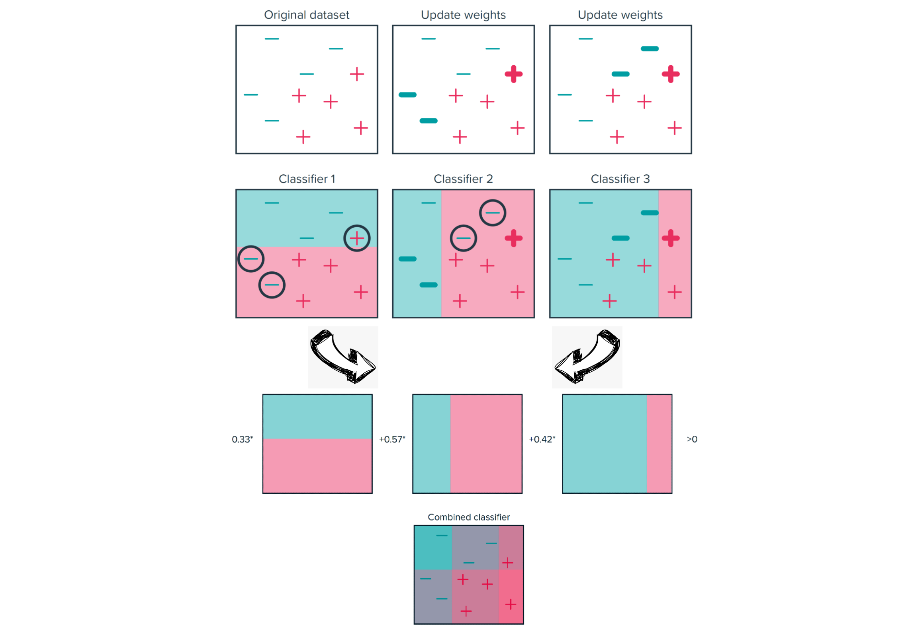

<!DOCTYPE html>
<html lang="es" xml:lang="es">
<head>

  <meta charset="utf-8" />
  <meta http-equiv="X-UA-Compatible" content="IE=edge" />
  <title>Capítulo 10 Arboles de decision | Ciencia de Datos</title>
  <meta name="description" content="BCRA" />
  <meta name="generator" content="bookdown 0.45 and GitBook 2.6.7" />

  <meta property="og:title" content="Capítulo 10 Arboles de decision | Ciencia de Datos" />
  <meta property="og:type" content="book" />
  
  <meta property="og:description" content="BCRA" />
  <meta name="github-repo" content="msangia/msangia.github" />

  <meta name="twitter:card" content="summary" />
  <meta name="twitter:title" content="Capítulo 10 Arboles de decision | Ciencia de Datos" />
  <meta name="twitter:site" content="@msangia" />
  <meta name="twitter:description" content="BCRA" />
  

<meta name="author" content="Máximo Sangiácomo" />


  <meta name="viewport" content="width=device-width, initial-scale=1" />
  <meta name="apple-mobile-web-app-capable" content="yes" />
  <meta name="apple-mobile-web-app-status-bar-style" content="black" />
  
  
<link rel="prev" href="logit.html"/>
<link rel="next" href="nnet.html"/>
<script src="libs/jquery-3.6.0/jquery-3.6.0.min.js"></script>
<script src="https://cdn.jsdelivr.net/npm/fuse.js@6.4.6/dist/fuse.min.js"></script>
<link href="libs/gitbook-2.6.7/css/style.css" rel="stylesheet" />
<link href="libs/gitbook-2.6.7/css/plugin-table.css" rel="stylesheet" />
<link href="libs/gitbook-2.6.7/css/plugin-bookdown.css" rel="stylesheet" />
<link href="libs/gitbook-2.6.7/css/plugin-highlight.css" rel="stylesheet" />
<link href="libs/gitbook-2.6.7/css/plugin-search.css" rel="stylesheet" />
<link href="libs/gitbook-2.6.7/css/plugin-fontsettings.css" rel="stylesheet" />
<link href="libs/gitbook-2.6.7/css/plugin-clipboard.css" rel="stylesheet" />


<link href="libs/anchor-sections-1.1.0/anchor-sections.css" rel="stylesheet" />
<link href="libs/anchor-sections-1.1.0/anchor-sections-hash.css" rel="stylesheet" />
<script src="libs/anchor-sections-1.1.0/anchor-sections.js"></script>
<html>
  <head>
	<link rel="shortcut icon" href="images/favicon.png" />
  </head>
  <body>
  </body>
</html>


<style type="text/css">
pre > code.sourceCode { white-space: pre; position: relative; }
pre > code.sourceCode > span { line-height: 1.25; }
pre > code.sourceCode > span:empty { height: 1.2em; }
.sourceCode { overflow: visible; }
code.sourceCode > span { color: inherit; text-decoration: inherit; }
pre.sourceCode { margin: 0; }
@media screen {
div.sourceCode { overflow: auto; }
}
@media print {
pre > code.sourceCode { white-space: pre-wrap; }
pre > code.sourceCode > span { display: inline-block; text-indent: -5em; padding-left: 5em; }
}
pre.numberSource code
  { counter-reset: source-line 0; }
pre.numberSource code > span
  { position: relative; left: -4em; counter-increment: source-line; }
pre.numberSource code > span > a:first-child::before
  { content: counter(source-line);
    position: relative; left: -1em; text-align: right; vertical-align: baseline;
    border: none; display: inline-block;
    -webkit-touch-callout: none; -webkit-user-select: none;
    -khtml-user-select: none; -moz-user-select: none;
    -ms-user-select: none; user-select: none;
    padding: 0 4px; width: 4em;
    color: #aaaaaa;
  }
pre.numberSource { margin-left: 3em; border-left: 1px solid #aaaaaa;  padding-left: 4px; }
div.sourceCode
  {   }
@media screen {
pre > code.sourceCode > span > a:first-child::before { text-decoration: underline; }
}
code span.al { color: #ff0000; font-weight: bold; } /* Alert */
code span.an { color: #60a0b0; font-weight: bold; font-style: italic; } /* Annotation */
code span.at { color: #7d9029; } /* Attribute */
code span.bn { color: #40a070; } /* BaseN */
code span.bu { color: #008000; } /* BuiltIn */
code span.cf { color: #007020; font-weight: bold; } /* ControlFlow */
code span.ch { color: #4070a0; } /* Char */
code span.cn { color: #880000; } /* Constant */
code span.co { color: #60a0b0; font-style: italic; } /* Comment */
code span.cv { color: #60a0b0; font-weight: bold; font-style: italic; } /* CommentVar */
code span.do { color: #ba2121; font-style: italic; } /* Documentation */
code span.dt { color: #902000; } /* DataType */
code span.dv { color: #40a070; } /* DecVal */
code span.er { color: #ff0000; font-weight: bold; } /* Error */
code span.ex { } /* Extension */
code span.fl { color: #40a070; } /* Float */
code span.fu { color: #06287e; } /* Function */
code span.im { color: #008000; font-weight: bold; } /* Import */
code span.in { color: #60a0b0; font-weight: bold; font-style: italic; } /* Information */
code span.kw { color: #007020; font-weight: bold; } /* Keyword */
code span.op { color: #666666; } /* Operator */
code span.ot { color: #007020; } /* Other */
code span.pp { color: #bc7a00; } /* Preprocessor */
code span.sc { color: #4070a0; } /* SpecialChar */
code span.ss { color: #bb6688; } /* SpecialString */
code span.st { color: #4070a0; } /* String */
code span.va { color: #19177c; } /* Variable */
code span.vs { color: #4070a0; } /* VerbatimString */
code span.wa { color: #60a0b0; font-weight: bold; font-style: italic; } /* Warning */
</style>

<style type="text/css">
  
  div.hanging-indent{margin-left: 1.5em; text-indent: -1.5em;}
</style>
<style type="text/css">
/* Used with Pandoc 2.11+ new --citeproc when CSL is used */
div.csl-bib-body { }
div.csl-entry {
  clear: both;
  margin-bottom: 0em;
}
.hanging div.csl-entry {
  margin-left:2em;
  text-indent:-2em;
}
div.csl-left-margin {
  min-width:2em;
  float:left;
}
div.csl-right-inline {
  margin-left:2em;
  padding-left:1em;
}
div.csl-indent {
  margin-left: 2em;
}
</style>

<link rel="stylesheet" href="css/style.css" type="text/css" />
<link rel="stylesheet" href="css/r4ds.css" type="text/css" />
</head>

<body>


  <div class="book without-animation with-summary font-size-2 font-family-1" data-basepath=".">

    <div class="book-summary">
      <nav role="navigation">

<ul class="summary">
<li><a href="./">Ciencia de Datos - BCRA</a></li>

<li class="divider"></li>
<li class="chapter" data-level="" data-path="index.html"><a href="index.html"><i class="fa fa-check"></i>Descripcion del curso</a></li>
<li class="chapter" data-level="1" data-path="intro.html"><a href="intro.html"><i class="fa fa-check"></i><b>1</b> Introduccion a R</a>
<ul>
<li class="chapter" data-level="1.1" data-path="intro.html"><a href="intro.html#primeros-pasos"><i class="fa fa-check"></i><b>1.1</b> Primeros pasos</a></li>
<li class="chapter" data-level="1.2" data-path="intro.html"><a href="intro.html#tu-primer-c%C3%B3digo"><i class="fa fa-check"></i><b>1.2</b> Tu primer código</a></li>
<li class="chapter" data-level="1.3" data-path="intro.html"><a href="intro.html#busacar-ayuda"><i class="fa fa-check"></i><b>1.3</b> Busacar ayuda</a></li>
<li class="chapter" data-level="1.4" data-path="intro.html"><a href="intro.html#tipos-de-datos"><i class="fa fa-check"></i><b>1.4</b> Tipos de datos</a></li>
<li class="chapter" data-level="1.5" data-path="intro.html"><a href="intro.html#limpieza-de-memoria"><i class="fa fa-check"></i><b>1.5</b> Limpieza de memoria</a></li>
<li class="chapter" data-level="1.6" data-path="intro.html"><a href="intro.html#asignaci%C3%B3n-de-valores"><i class="fa fa-check"></i><b>1.6</b> Asignación de valores</a></li>
<li class="chapter" data-level="1.7" data-path="intro.html"><a href="intro.html#operadores-aritm%C3%A9ticos"><i class="fa fa-check"></i><b>1.7</b> Operadores aritméticos</a></li>
<li class="chapter" data-level="1.8" data-path="intro.html"><a href="intro.html#operadores-relacionales"><i class="fa fa-check"></i><b>1.8</b> Operadores relacionales</a></li>
<li class="chapter" data-level="1.9" data-path="intro.html"><a href="intro.html#operadores-l%C3%B3gicos"><i class="fa fa-check"></i><b>1.9</b> Operadores lógicos</a></li>
<li class="chapter" data-level="1.10" data-path="intro.html"><a href="intro.html#vectores"><i class="fa fa-check"></i><b>1.10</b> Vectores</a></li>
<li class="chapter" data-level="1.11" data-path="intro.html"><a href="intro.html#secuencias"><i class="fa fa-check"></i><b>1.11</b> Secuencias</a></li>
<li class="chapter" data-level="1.12" data-path="intro.html"><a href="intro.html#factores"><i class="fa fa-check"></i><b>1.12</b> Factores</a></li>
<li class="chapter" data-level="1.13" data-path="intro.html"><a href="intro.html#matrices"><i class="fa fa-check"></i><b>1.13</b> Matrices</a></li>
<li class="chapter" data-level="1.14" data-path="intro.html"><a href="intro.html#listas"><i class="fa fa-check"></i><b>1.14</b> Listas</a></li>
<li class="chapter" data-level="1.15" data-path="intro.html"><a href="intro.html#data-frames"><i class="fa fa-check"></i><b>1.15</b> Data frames</a></li>
<li class="chapter" data-level="1.16" data-path="intro.html"><a href="intro.html#r-base"><i class="fa fa-check"></i><b>1.16</b> R base</a></li>
<li class="chapter" data-level="1.17" data-path="intro.html"><a href="intro.html#apply-lapply-y-tapply"><i class="fa fa-check"></i><b>1.17</b> apply, lapply y tapply</a></li>
<li class="chapter" data-level="1.18" data-path="intro.html"><a href="intro.html#map"><i class="fa fa-check"></i><b>1.18</b> Map</a></li>
<li class="chapter" data-level="1.19" data-path="intro.html"><a href="intro.html#loops"><i class="fa fa-check"></i><b>1.19</b> Loops</a></li>
<li class="chapter" data-level="1.20" data-path="intro.html"><a href="intro.html#condicionales"><i class="fa fa-check"></i><b>1.20</b> Condicionales</a></li>
<li class="chapter" data-level="1.21" data-path="intro.html"><a href="intro.html#funciones"><i class="fa fa-check"></i><b>1.21</b> Funciones</a>
<ul>
<li class="chapter" data-level="1.21.1" data-path="intro.html"><a href="intro.html#output-m%C3%A1s-de-un-resultado"><i class="fa fa-check"></i><b>1.21.1</b> Output más de un resultado</a></li>
<li class="chapter" data-level="1.21.2" data-path="intro.html"><a href="intro.html#argumentos-con-valores-default"><i class="fa fa-check"></i><b>1.21.2</b> Argumentos con valores default</a></li>
</ul></li>
</ul></li>
<li class="chapter" data-level="2" data-path="bd.html"><a href="bd.html"><i class="fa fa-check"></i><b>2</b> Base de datos</a>
<ul>
<li class="chapter" data-level="2.1" data-path="bd.html"><a href="bd.html#directorio-de-trabajo"><i class="fa fa-check"></i><b>2.1</b> Directorio de trabajo</a></li>
<li class="chapter" data-level="2.2" data-path="bd.html"><a href="bd.html#cargar-datos"><i class="fa fa-check"></i><b>2.2</b> Cargar datos</a>
<ul>
<li class="chapter" data-level="2.2.1" data-path="bd.html"><a href="bd.html#ingrasar-datos-con-tidyverse"><i class="fa fa-check"></i><b>2.2.1</b> Ingrasar datos con <code>tidyverse</code></a></li>
<li class="chapter" data-level="2.2.2" data-path="bd.html"><a href="bd.html#bases-de-stata"><i class="fa fa-check"></i><b>2.2.2</b> Bases de Stata</a></li>
</ul></li>
<li class="chapter" data-level="2.3" data-path="bd.html"><a href="bd.html#problemas-de-imputaci%C3%B3n"><i class="fa fa-check"></i><b>2.3</b> Problemas de imputación</a></li>
<li class="chapter" data-level="2.4" data-path="bd.html"><a href="bd.html#exportar-datos"><i class="fa fa-check"></i><b>2.4</b> Exportar datos</a></li>
<li class="chapter" data-level="2.5" data-path="bd.html"><a href="bd.html#pipe"><i class="fa fa-check"></i><b>2.5</b> Pipe</a></li>
<li class="chapter" data-level="2.6" data-path="bd.html"><a href="bd.html#variables"><i class="fa fa-check"></i><b>2.6</b> Variables</a></li>
<li class="chapter" data-level="2.7" data-path="bd.html"><a href="bd.html#merge"><i class="fa fa-check"></i><b>2.7</b> Merge</a></li>
<li class="chapter" data-level="2.8" data-path="bd.html"><a href="bd.html#variables-group_by-mutate"><i class="fa fa-check"></i><b>2.8</b> Variables: group_by, mutate</a></li>
<li class="chapter" data-level="2.9" data-path="bd.html"><a href="bd.html#guardar-datos"><i class="fa fa-check"></i><b>2.9</b> Guardar datos</a></li>
<li class="chapter" data-level="2.10" data-path="bd.html"><a href="bd.html#valores-missing"><i class="fa fa-check"></i><b>2.10</b> Valores missing</a>
<ul>
<li class="chapter" data-level="2.10.1" data-path="bd.html"><a href="bd.html#eliminar-valores-missing"><i class="fa fa-check"></i><b>2.10.1</b> Eliminar valores missing</a></li>
</ul></li>
<li class="chapter" data-level="2.11" data-path="bd.html"><a href="bd.html#loop"><i class="fa fa-check"></i><b>2.11</b> Loop</a></li>
<li class="chapter" data-level="2.12" data-path="bd.html"><a href="bd.html#pivot-reshape"><i class="fa fa-check"></i><b>2.12</b> Pivot (Reshape)</a></li>
<li class="chapter" data-level="2.13" data-path="bd.html"><a href="bd.html#row-bind-append"><i class="fa fa-check"></i><b>2.13</b> Row bind (Append)</a></li>
<li class="chapter" data-level="2.14" data-path="bd.html"><a href="bd.html#strings"><i class="fa fa-check"></i><b>2.14</b> Strings</a></li>
<li class="chapter" data-level="2.15" data-path="bd.html"><a href="bd.html#fechas"><i class="fa fa-check"></i><b>2.15</b> Fechas</a>
<ul>
<li class="chapter" data-level="2.15.1" data-path="bd.html"><a href="bd.html#manipulaci%C3%B3n-de-fechas"><i class="fa fa-check"></i><b>2.15.1</b> Manipulación de fechas</a></li>
<li class="chapter" data-level="2.15.2" data-path="bd.html"><a href="bd.html#parsing-robusto-con-lubridate"><i class="fa fa-check"></i><b>2.15.2</b> Parsing robusto con <code>lubridate</code></a></li>
</ul></li>
<li class="chapter" data-level="2.16" data-path="bd.html"><a href="bd.html#an%C3%A1lisis-de-datos"><i class="fa fa-check"></i><b>2.16</b> Análisis de datos</a>
<ul>
<li class="chapter" data-level="2.16.1" data-path="bd.html"><a href="bd.html#tablas"><i class="fa fa-check"></i><b>2.16.1</b> Tablas</a></li>
</ul></li>
<li class="chapter" data-level="2.17" data-path="bd.html"><a href="bd.html#group_by-summarise"><i class="fa fa-check"></i><b>2.17</b> group_by, summarise</a></li>
<li class="chapter" data-level="2.18" data-path="bd.html"><a href="bd.html#vector-de-resultados"><i class="fa fa-check"></i><b>2.18</b> Vector de resultados</a></li>
</ul></li>
<li class="chapter" data-level="3" data-path="gph1.html"><a href="gph1.html"><i class="fa fa-check"></i><b>3</b> Gráficos - Parte I</a>
<ul>
<li class="chapter" data-level="3.1" data-path="gph1.html"><a href="gph1.html#ggplot2"><i class="fa fa-check"></i><b>3.1</b> ggplot2</a></li>
<li class="chapter" data-level="3.2" data-path="gph1.html"><a href="gph1.html#estad%C3%ADsticas-con-ggplot2"><i class="fa fa-check"></i><b>3.2</b> Estadísticas con <code>ggplot2</code></a></li>
<li class="chapter" data-level="3.3" data-path="gph1.html"><a href="gph1.html#ggplot-position"><i class="fa fa-check"></i><b>3.3</b> GGPlot (position)</a></li>
<li class="chapter" data-level="3.4" data-path="gph1.html"><a href="gph1.html#time-series"><i class="fa fa-check"></i><b>3.4</b> Time series</a></li>
<li class="chapter" data-level="3.5" data-path="gph1.html"><a href="gph1.html#labels"><i class="fa fa-check"></i><b>3.5</b> Labels</a></li>
<li class="chapter" data-level="3.6" data-path="gph1.html"><a href="gph1.html#orden-de-factores-en-los-ejes-variables-string"><i class="fa fa-check"></i><b>3.6</b> Orden de factores en los ejes (variables string)</a></li>
<li class="chapter" data-level="3.7" data-path="gph1.html"><a href="gph1.html#guardar-un-gr%C3%A1fico"><i class="fa fa-check"></i><b>3.7</b> Guardar un gráfico</a></li>
</ul></li>
<li class="chapter" data-level="4" data-path="gph2.html"><a href="gph2.html"><i class="fa fa-check"></i><b>4</b> Gráficos - Parte II</a>
<ul>
<li class="chapter" data-level="4.1" data-path="gph2.html"><a href="gph2.html#t%C3%ADtulos-en-los-ejes"><i class="fa fa-check"></i><b>4.1</b> Títulos en los ejes</a></li>
<li class="chapter" data-level="4.2" data-path="gph2.html"><a href="gph2.html#combinar-distintos-graficos"><i class="fa fa-check"></i><b>4.2</b> Combinar distintos graficos</a></li>
<li class="chapter" data-level="4.3" data-path="gph2.html"><a href="gph2.html#agrandar-una-parte-del-grafico"><i class="fa fa-check"></i><b>4.3</b> Agrandar una parte del grafico</a></li>
<li class="chapter" data-level="4.4" data-path="gph2.html"><a href="gph2.html#escala-de-colores-manual"><i class="fa fa-check"></i><b>4.4</b> Escala de colores manual</a></li>
<li class="chapter" data-level="4.5" data-path="gph2.html"><a href="gph2.html#l%C3%ADmites-epacios-y-etiquetas"><i class="fa fa-check"></i><b>4.5</b> Límites, epacios y etiquetas</a></li>
<li class="chapter" data-level="4.6" data-path="gph2.html"><a href="gph2.html#leyendas"><i class="fa fa-check"></i><b>4.6</b> Leyendas</a></li>
<li class="chapter" data-level="4.7" data-path="gph2.html"><a href="gph2.html#posici%C3%B3n-de-la-leyenda"><i class="fa fa-check"></i><b>4.7</b> Posición de la leyenda</a></li>
<li class="chapter" data-level="4.8" data-path="gph2.html"><a href="gph2.html#unir-leyendas"><i class="fa fa-check"></i><b>4.8</b> Unir leyendas</a></li>
<li class="chapter" data-level="4.9" data-path="gph2.html"><a href="gph2.html#separar-leyendas"><i class="fa fa-check"></i><b>4.9</b> Separar leyendas</a></li>
<li class="chapter" data-level="4.10" data-path="gph2.html"><a href="gph2.html#agrupar-y-desagrupar"><i class="fa fa-check"></i><b>4.10</b> Agrupar y desagrupar</a></li>
<li class="chapter" data-level="4.11" data-path="gph2.html"><a href="gph2.html#leyenda-manual"><i class="fa fa-check"></i><b>4.11</b> Leyenda manual</a></li>
<li class="chapter" data-level="4.12" data-path="gph2.html"><a href="gph2.html#estad%C3%ADsticas"><i class="fa fa-check"></i><b>4.12</b> Estadísticas</a></li>
<li class="chapter" data-level="4.13" data-path="gph2.html"><a href="gph2.html#themes"><i class="fa fa-check"></i><b>4.13</b> Themes</a></li>
</ul></li>
<li class="chapter" data-level="5" data-path="rmd.html"><a href="rmd.html"><i class="fa fa-check"></i><b>5</b> R Markdown</a>
<ul>
<li class="chapter" data-level="5.1" data-path="rmd.html"><a href="rmd.html#informes-con-r-markdown"><i class="fa fa-check"></i><b>5.1</b> Informes con R Markdown</a>
<ul>
<li class="chapter" data-level="5.1.1" data-path="rmd.html"><a href="rmd.html#intrormd"><i class="fa fa-check"></i><b>5.1.1</b> Introduccion</a></li>
<li class="chapter" data-level="5.1.2" data-path="rmd.html"><a href="rmd.html#referencias-cruzadas"><i class="fa fa-check"></i><b>5.1.2</b> Referencias cruzadas</a></li>
<li class="chapter" data-level="5.1.3" data-path="rmd.html"><a href="rmd.html#regresion"><i class="fa fa-check"></i><b>5.1.3</b> Regresion</a></li>
<li class="chapter" data-level="5.1.4" data-path="rmd.html"><a href="rmd.html#bullets"><i class="fa fa-check"></i><b>5.1.4</b> Bullets</a></li>
<li class="chapter" data-level="" data-path="rmd.html"><a href="rmd.html#bibliografia"><i class="fa fa-check"></i>Bibliografia</a></li>
</ul></li>
<li class="chapter" data-level="5.2" data-path="rmd.html"><a href="rmd.html#abc-latex"><i class="fa fa-check"></i><b>5.2</b> Anexo. ABC de LaTeX</a></li>
</ul></li>
<li class="chapter" data-level="6" data-path="conceptos.html"><a href="conceptos.html"><i class="fa fa-check"></i><b>6</b> Conceptos generales</a>
<ul>
<li class="chapter" data-level="6.1" data-path="conceptos.html"><a href="conceptos.html#estimacion"><i class="fa fa-check"></i><b>6.1</b> Estimacion</a></li>
<li class="chapter" data-level="6.2" data-path="conceptos.html"><a href="conceptos.html#prediccion"><i class="fa fa-check"></i><b>6.2</b> Prediccion</a></li>
<li class="chapter" data-level="6.3" data-path="conceptos.html"><a href="conceptos.html#inferencia"><i class="fa fa-check"></i><b>6.3</b> Inferencia</a></li>
<li class="chapter" data-level="6.4" data-path="conceptos.html"><a href="conceptos.html#ml-vs-estad%C3%ADstica-cl%C3%A1sica-en-qu%C3%A9-se-diferencian"><i class="fa fa-check"></i><b>6.4</b> ML vs Estadística clásica: ¿en qué se diferencian?</a></li>
<li class="chapter" data-level="6.5" data-path="conceptos.html"><a href="conceptos.html#metodos-parametricos"><i class="fa fa-check"></i><b>6.5</b> Metodos parametricos</a></li>
<li class="chapter" data-level="6.6" data-path="conceptos.html"><a href="conceptos.html#metodos-no-parametricos"><i class="fa fa-check"></i><b>6.6</b> Metodos no parametricos</a></li>
<li class="chapter" data-level="6.7" data-path="conceptos.html"><a href="conceptos.html#evaluacion-de-la-precision-del-modelo"><i class="fa fa-check"></i><b>6.7</b> Evaluacion de la precision del modelo</a>
<ul>
<li class="chapter" data-level="6.7.1" data-path="conceptos.html"><a href="conceptos.html#ajuste"><i class="fa fa-check"></i><b>6.7.1</b> Calidad del ajuste</a></li>
<li class="chapter" data-level="6.7.2" data-path="conceptos.html"><a href="conceptos.html#trade-off-sesgo-varianza"><i class="fa fa-check"></i><b>6.7.2</b> Trade-off Sesgo-Varianza</a></li>
<li class="chapter" data-level="6.7.3" data-path="conceptos.html"><a href="conceptos.html#clasificacion"><i class="fa fa-check"></i><b>6.7.3</b> Clasificacion</a></li>
<li class="chapter" data-level="6.7.4" data-path="conceptos.html"><a href="conceptos.html#confusion"><i class="fa fa-check"></i><b>6.7.4</b> Matriz de confusion</a></li>
<li class="chapter" data-level="6.7.5" data-path="conceptos.html"><a href="conceptos.html#roc"><i class="fa fa-check"></i><b>6.7.5</b> Curva ROC</a></li>
</ul></li>
<li class="chapter" data-level="6.8" data-path="conceptos.html"><a href="conceptos.html#resampling-methods"><i class="fa fa-check"></i><b>6.8</b> Resampling Methods</a>
<ul>
<li class="chapter" data-level="6.8.1" data-path="conceptos.html"><a href="conceptos.html#cv"><i class="fa fa-check"></i><b>6.8.1</b> Cross Validation</a></li>
<li class="chapter" data-level="6.8.2" data-path="conceptos.html"><a href="conceptos.html#bootstrap"><i class="fa fa-check"></i><b>6.8.2</b> Bootstrap</a></li>
</ul></li>
<li class="chapter" data-level="6.9" data-path="conceptos.html"><a href="conceptos.html#resumen"><i class="fa fa-check"></i><b>6.9</b> Resumen</a>
<ul>
<li class="chapter" data-level="6.9.1" data-path="conceptos.html"><a href="conceptos.html#dos-maneras-de-aproximar-f"><i class="fa fa-check"></i><b>6.9.1</b> Dos maneras de aproximar <span class="math inline">\(f\)</span></a></li>
<li class="chapter" data-level="6.9.2" data-path="conceptos.html"><a href="conceptos.html#el-equilibrio-clave-sesgo-vs-varianza"><i class="fa fa-check"></i><b>6.9.2</b> El equilibrio clave: <em>Sesgo vs Varianza</em></a></li>
</ul></li>
</ul></li>
<li class="chapter" data-level="7" data-path="mco.html"><a href="mco.html"><i class="fa fa-check"></i><b>7</b> Regresión lineal</a>
<ul>
<li class="chapter" data-level="7.1" data-path="mco.html"><a href="mco.html#planteo-del-modelo"><i class="fa fa-check"></i><b>7.1</b> Planteo del modelo</a></li>
<li class="chapter" data-level="7.2" data-path="mco.html"><a href="mco.html#c%C3%B3mo-se-estiman-los-par%C3%A1metros"><i class="fa fa-check"></i><b>7.2</b> ¿Cómo se estiman los parámetros?</a></li>
<li class="chapter" data-level="7.3" data-path="mco.html"><a href="mco.html#c%C3%B3mo-funciona-en-la-pr%C3%A1ctica"><i class="fa fa-check"></i><b>7.3</b> ¿Cómo funciona en la práctica?</a></li>
<li class="chapter" data-level="7.4" data-path="mco.html"><a href="mco.html#interpretaci%C3%B3n-de-coeficientes"><i class="fa fa-check"></i><b>7.4</b> Interpretación de coeficientes</a>
<ul>
<li class="chapter" data-level="7.4.1" data-path="mco.html"><a href="mco.html#intercepto-beta_0"><i class="fa fa-check"></i><b>7.4.1</b> Intercepto (<span class="math inline">\(\beta_0\)</span>)</a></li>
<li class="chapter" data-level="7.4.2" data-path="mco.html"><a href="mco.html#coeficiente-de-pendiente-beta_1"><i class="fa fa-check"></i><b>7.4.2</b> Coeficiente de pendiente (<span class="math inline">\(\beta_1\)</span>)</a></li>
<li class="chapter" data-level="7.4.3" data-path="mco.html"><a href="mco.html#modelo-m%C3%BAltiple-pensar-en-mantener-todo-lo-dem%C3%A1s-constante"><i class="fa fa-check"></i><b>7.4.3</b> Modelo múltiple: pensar en “mantener todo lo demás constante”</a></li>
</ul></li>
<li class="chapter" data-level="7.5" data-path="mco.html"><a href="mco.html#predicci%C3%B3n"><i class="fa fa-check"></i><b>7.5</b> Predicción</a></li>
<li class="chapter" data-level="7.6" data-path="mco.html"><a href="mco.html#conclusi%C3%B3n"><i class="fa fa-check"></i><b>7.6</b> Conclusión</a></li>
<li class="chapter" data-level="7.7" data-path="mco.html"><a href="mco.html#anexo.-relacion-entre-estimacion-optima-y-prediccion-optima"><i class="fa fa-check"></i><b>7.7</b> Anexo. Relacion entre estimacion optima y prediccion optima</a></li>
</ul></li>
<li class="chapter" data-level="8" data-path="shrinkage-methods.html"><a href="shrinkage-methods.html"><i class="fa fa-check"></i><b>8</b> Regularización: Ridge, Lasso y Elastic Net Logit</a>
<ul>
<li class="chapter" data-level="8.1" data-path="shrinkage-methods.html"><a href="shrinkage-methods.html#motivaci%C3%B3n-por-qu%C3%A9-regularizar"><i class="fa fa-check"></i><b>8.1</b> Motivación: ¿por qué regularizar?</a></li>
<li class="chapter" data-level="8.2" data-path="shrinkage-methods.html"><a href="shrinkage-methods.html#ridge-regression-penalizaci%C3%B3n-l2"><i class="fa fa-check"></i><b>8.2</b> Ridge Regression (Penalización L2)</a></li>
<li class="chapter" data-level="8.3" data-path="shrinkage-methods.html"><a href="shrinkage-methods.html#lasso-penalizaci%C3%B3n-l1"><i class="fa fa-check"></i><b>8.3</b> Lasso (Penalización L1)</a></li>
<li class="chapter" data-level="8.4" data-path="shrinkage-methods.html"><a href="shrinkage-methods.html#elastic-net-l1-l2"><i class="fa fa-check"></i><b>8.4</b> Elastic Net (L1 + L2)</a></li>
<li class="chapter" data-level="8.5" data-path="shrinkage-methods.html"><a href="shrinkage-methods.html#selecci%C3%B3n-del-hiperpar%C3%A1metro-lambda-lambda"><i class="fa fa-check"></i><b>8.5</b> Selección del hiperparámetro lambda (<span class="math inline">\(\lambda\)</span>)</a></li>
<li class="chapter" data-level="8.6" data-path="shrinkage-methods.html"><a href="shrinkage-methods.html#ejemplo-aplicado"><i class="fa fa-check"></i><b>8.6</b> Ejemplo aplicado</a>
<ul>
<li class="chapter" data-level="8.6.1" data-path="shrinkage-methods.html"><a href="shrinkage-methods.html#ridge"><i class="fa fa-check"></i><b>8.6.1</b> Ridge</a></li>
<li class="chapter" data-level="8.6.2" data-path="shrinkage-methods.html"><a href="shrinkage-methods.html#lasso"><i class="fa fa-check"></i><b>8.6.2</b> Lasso</a></li>
<li class="chapter" data-level="8.6.3" data-path="shrinkage-methods.html"><a href="shrinkage-methods.html#elastic-net"><i class="fa fa-check"></i><b>8.6.3</b> Elastic Net</a></li>
</ul></li>
<li class="chapter" data-level="8.7" data-path="shrinkage-methods.html"><a href="shrinkage-methods.html#comparaci%C3%B3n-general"><i class="fa fa-check"></i><b>8.7</b> Comparación general</a></li>
<li class="chapter" data-level="8.8" data-path="shrinkage-methods.html"><a href="shrinkage-methods.html#conclusi%C3%B3n-1"><i class="fa fa-check"></i><b>8.8</b> Conclusión</a></li>
</ul></li>
<li class="chapter" data-level="9" data-path="logit.html"><a href="logit.html"><i class="fa fa-check"></i><b>9</b> Logit</a>
<ul>
<li class="chapter" data-level="9.1" data-path="logit.html"><a href="logit.html#modelo-logit"><i class="fa fa-check"></i><b>9.1</b> Modelo <em>logit</em></a>
<ul>
<li class="chapter" data-level="9.1.1" data-path="logit.html"><a href="logit.html#interpretacion-de-coeficientes-en-el-modelo-logit"><i class="fa fa-check"></i><b>9.1.1</b> Interpretacion de coeficientes en el modelo <em>logit</em></a></li>
</ul></li>
<li class="chapter" data-level="9.2" data-path="logit.html"><a href="logit.html#conclusi%C3%B3n-2"><i class="fa fa-check"></i><b>9.2</b> Conclusión</a></li>
<li class="chapter" data-level="9.3" data-path="logit.html"><a href="logit.html#aplicacion-practica"><i class="fa fa-check"></i><b>9.3</b> Aplicacion practica</a></li>
</ul></li>
<li class="chapter" data-level="10" data-path="arboles.html"><a href="arboles.html"><i class="fa fa-check"></i><b>10</b> Arboles de decision</a>
<ul>
<li class="chapter" data-level="10.1" data-path="arboles.html"><a href="arboles.html#classification-and-regression-tree-cart"><i class="fa fa-check"></i><b>10.1</b> <em>Classification and Regression Tree</em> (CART)</a></li>
<li class="chapter" data-level="10.2" data-path="arboles.html"><a href="arboles.html#m%C3%A9todos-de-ensamble-bagging-random-forest-y-boosting"><i class="fa fa-check"></i><b>10.2</b> Métodos de Ensamble: Bagging, Random Forest y Boosting</a></li>
<li class="chapter" data-level="10.3" data-path="arboles.html"><a href="arboles.html#bagging"><i class="fa fa-check"></i><b>10.3</b> Bagging</a></li>
<li class="chapter" data-level="10.4" data-path="arboles.html"><a href="arboles.html#random-forest"><i class="fa fa-check"></i><b>10.4</b> Random Forest</a></li>
<li class="chapter" data-level="10.5" data-path="arboles.html"><a href="arboles.html#boosting"><i class="fa fa-check"></i><b>10.5</b> Boosting</a>
<ul>
<li class="chapter" data-level="10.5.1" data-path="arboles.html"><a href="arboles.html#ada-boost"><i class="fa fa-check"></i><b>10.5.1</b> Ada Boost</a></li>
</ul></li>
<li class="chapter" data-level="10.6" data-path="arboles.html"><a href="arboles.html#aplicacion-pr%C3%A1ctica"><i class="fa fa-check"></i><b>10.6</b> Aplicacion práctica</a>
<ul>
<li class="chapter" data-level="10.6.1" data-path="arboles.html"><a href="arboles.html#carga-de-librer%C3%ADas"><i class="fa fa-check"></i><b>10.6.1</b> Carga de librerías</a></li>
<li class="chapter" data-level="10.6.2" data-path="arboles.html"><a href="arboles.html#carga-de-datos"><i class="fa fa-check"></i><b>10.6.2</b> Carga de datos</a></li>
<li class="chapter" data-level="10.6.3" data-path="arboles.html"><a href="arboles.html#renombramos-identificadores"><i class="fa fa-check"></i><b>10.6.3</b> Renombramos identificadores</a></li>
<li class="chapter" data-level="10.6.4" data-path="arboles.html"><a href="arboles.html#eliminamos-registros-con-edad-no-razonable"><i class="fa fa-check"></i><b>10.6.4</b> Eliminamos registros con edad no razonable</a></li>
<li class="chapter" data-level="10.6.5" data-path="arboles.html"><a href="arboles.html#identificamos-variables-num%C3%A9ricas"><i class="fa fa-check"></i><b>10.6.5</b> Identificamos variables numéricas</a></li>
<li class="chapter" data-level="10.6.6" data-path="arboles.html"><a href="arboles.html#par%C3%A1metros-de-imputaci%C3%B3n"><i class="fa fa-check"></i><b>10.6.6</b> Parámetros de imputación</a></li>
<li class="chapter" data-level="10.6.7" data-path="arboles.html"><a href="arboles.html#funci%C3%B3n-de-preprocesamiento"><i class="fa fa-check"></i><b>10.6.7</b> Función de preprocesamiento</a></li>
<li class="chapter" data-level="10.6.8" data-path="arboles.html"><a href="arboles.html#aplicamos-preprocesamiento-a-ambos-datasets"><i class="fa fa-check"></i><b>10.6.8</b> Aplicamos preprocesamiento a ambos datasets</a></li>
<li class="chapter" data-level="10.6.9" data-path="arboles.html"><a href="arboles.html#divisi%C3%B3n-en-entrenamiento-y-test-etiquetado"><i class="fa fa-check"></i><b>10.6.9</b> División en entrenamiento y test etiquetado</a></li>
<li class="chapter" data-level="10.6.10" data-path="arboles.html"><a href="arboles.html#cross-validation-estratificado"><i class="fa fa-check"></i><b>10.6.10</b> Cross-validation estratificado</a></li>
<li class="chapter" data-level="10.6.11" data-path="arboles.html"><a href="arboles.html#b%C3%BAsqueda-y-selecci%C3%B3n-de-hiperpar%C3%A1metros"><i class="fa fa-check"></i><b>10.6.11</b> Búsqueda y selección de hiperparámetros</a></li>
<li class="chapter" data-level="10.6.12" data-path="arboles.html"><a href="arboles.html#validaci%C3%B3n-en-test-etiquetado"><i class="fa fa-check"></i><b>10.6.12</b> Validación en test etiquetado</a></li>
<li class="chapter" data-level="10.6.13" data-path="arboles.html"><a href="arboles.html#entrenamiento-final"><i class="fa fa-check"></i><b>10.6.13</b> Entrenamiento final</a></li>
<li class="chapter" data-level="10.6.14" data-path="arboles.html"><a href="arboles.html#aplicaci%C3%B3n-final-para-predicci%C3%B3n"><i class="fa fa-check"></i><b>10.6.14</b> Aplicación final para predicción</a></li>
</ul></li>
</ul></li>
<li class="chapter" data-level="11" data-path="nnet.html"><a href="nnet.html"><i class="fa fa-check"></i><b>11</b> Neural Networks</a>
<ul>
<li class="chapter" data-level="11.1" data-path="nnet.html"><a href="nnet.html#single-layer-neural-networks"><i class="fa fa-check"></i><b>11.1</b> Single Layer Neural Networks</a></li>
</ul></li>
<li class="chapter" data-level="12" data-path="cluster.html"><a href="cluster.html"><i class="fa fa-check"></i><b>12</b> Analisis de clusters</a>
<ul>
<li class="chapter" data-level="12.1" data-path="cluster.html"><a href="cluster.html#k-means-clustering"><i class="fa fa-check"></i><b>12.1</b> K-Means Clustering</a></li>
<li class="chapter" data-level="12.2" data-path="cluster.html"><a href="cluster.html#aplicacion-practica-1"><i class="fa fa-check"></i><b>12.2</b> Aplicacion practica</a></li>
</ul></li>
<li class="chapter" data-level="" data-path="bibliografia-1.html"><a href="bibliografia-1.html"><i class="fa fa-check"></i>Bibliografia</a></li>
<li class="divider"></li>
<li><a href="./" target="blank">Maximo Sangiacomo - GMyP</a></li>

</ul>

      </nav>
    </div>

    <div class="book-body">
      <div class="body-inner">
        <div class="book-header" role="navigation">
          <h1>
            <i class="fa fa-circle-o-notch fa-spin"></i><a href="./">Ciencia de Datos</a>
          </h1>
        </div>

        <div class="page-wrapper" tabindex="-1" role="main">
          <div class="page-inner">

            <section class="normal" id="section-">
<link href="css/style.css" rel="stylesheet">
<div class="hero-image-container"> 
  
</div>
<div id="arboles" class="section level1 hasAnchor" number="10">
<h1><span class="header-section-number">Capítulo 10</span> Arboles de decision<a href="arboles.html#arboles" class="anchor-section" aria-label="Anchor link to header"></a></h1>
<p>Los métodos basados en árboles para regresión y clasificación estratifican o segmentan el espacio predictor en varias regiones. Para hacer una predicción de una observación dada, normalmente utiliza el valor de respuesta promedio de las observaciones de la base de entrenamiento en la región a la que pertenece. En el caso de clasificación se asigna a la categoría mayoritaria dentro del nodo terminal.</p>
<div id="classification-and-regression-tree-cart" class="section level2 hasAnchor" number="10.1">
<h2><span class="header-section-number">10.1</span> <em>Classification and Regression Tree</em> (CART)<a href="arboles.html#classification-and-regression-tree-cart" class="anchor-section" aria-label="Anchor link to header"></a></h2>
<p>En el caso de árboles de regresión, si <span class="math inline">\(Y\)</span> es la respuesta y <span class="math inline">\(X_1\)</span> y <span class="math inline">\(X_2\)</span> los <em>inputs</em> se parte el espacio <span class="math inline">\((X_1, X_2)\)</span> en dos regiones, en base a una sola variable (partición horizontal o vertical). Dentro de cada región proponemos como predicción la media muestral de <span class="math inline">\(Y\)</span>.</p>
<p>Se busca elegir la variable y el punto de partición de manera óptima (mejor ajuste global). Es computacionalmente inviable considerar cada posible partición del espacio de atributos en <span class="math inline">\(J\)</span> regiones. Por lo tanto, toma un enfoque <em>top-down greedy</em> que se conoce como división binaria recursiva. El enfoque es <em>top-down</em> porque comienza en la parte superior del árbol (en cuyo punto todas las observaciones pertenecen a una sola región) y luego divide sucesivamente el espacio predictor; cada división se indica a través de dos nuevas ramas más abajo en el árbol. Es <em>greedy</em> porque en cada paso del proceso de construcción del árbol, la mejor división se hace en ese paso en particular, en lugar de mirar hacia adelante y elegir una división que conducirá a un mejor árbol en algún paso futuro.</p>
<p>El panel izquierdo de la Figura <a href="arboles.html#fig:tree">10.1</a> muestra un árbol de regresión para predecir el logaritmo del salario (en miles de dólares) de un jugador de béisbol, basado en la cantidad de años que ha jugado en las ligas mayores y la cantidad de <em>hits</em> que hizo en el año anterior. En un nodo interno dado, la etiqueta (de la forma <span class="math inline">\(X_j &lt; t_k\)</span>) indica la rama izquierda que sale de esa división, y la rama de la derecha corresponde a <span class="math inline">\(X_j \ge t_k\)</span>. Por ejemplo, la división en la parte superior del árbol da como resultado dos ramas grandes. La rama izquierda corresponde a <code>Years &lt; 4,5</code>, y la rama derecha corresponde a <code>Years &gt;= 4,5</code>.<a href="#fn19" class="footnote-ref" id="fnref19"><sup>19</sup></a> El árbol tiene dos nodos internos y tres nodos terminales u hojas. El número en cada hoja es la media de la variable de respuesta de las observaciones que caen allí. Por ejemplo, la predicción para el nodo terminal de la izquierda es <span class="math inline">\(e^{5,107} \times 1.000 = \$165.174\)</span>. El panel derecho la Figura <a href="arboles.html#fig:tree">10.1</a> muestra las regiones en función de <code>Years</code> y <code>Hits</code>.</p>
<div class="figure" style="text-align: center"><span style="display:block;" id="fig:tree"></span>

<p class="caption">
Figura 10.1: Arbol de regresión
</p>
</div>
<p>Notar:</p>
<ul>
<li><p>Cada región tiene su propio modelo.</p></li>
<li><p>Ciertas variables importan en determinadas regiones y no en otras (<em>Hits</em>).</p></li>
</ul>
<p>Dado <span class="math inline">\(Y\)</span> y <span class="math inline">\(X\)</span> un vector de <span class="math inline">\(p\)</span> variables con <span class="math inline">\(n\)</span> observaciones el algoritmo busca determinar cuál variable usar para la partición y que punto de esa variable usar para la partición. Si <span class="math inline">\(j\)</span> es la variable de partición y el punto de partición es <span class="math inline">\(s\)</span>, se definen los siguientes semiplanos:</p>
<p><span class="math display">\[\begin{align*}
  R_1(j,s) = &amp; {X \mid X_j &lt; s} \\
  R_2(j,s) = &amp; {X \mid X_j \ge s}
\end{align*}\]</span></p>
<p>Se trata de buscar la variable de partición <span class="math inline">\(X_j\)</span> y el punto de partición <span class="math inline">\(s\)</span> que resuelvan (minimizar el <span class="math inline">\(EMC\)</span> en cada región):</p>
<p><span class="math display" id="eq:region">\[\begin{equation}
\tag{10.1}
  \sum_{i: x_i \in R_1(j,s)} (y_i - \hat{y}_{R_1})^2 +  \sum_{i: x_i \in R_2(j,s)} (y_i - \hat{y}_{R_2})^2
\end{equation}\]</span></p>
<p>Donde <span class="math inline">\(\hat{y}_{R_1}\)</span> y <span class="math inline">\(\hat{y}_{R_2}\)</span> es el promedio de la respuesta en las regiones <span class="math inline">\(1\)</span> y <span class="math inline">\(2\)</span>, respectivamente. Para cada variable y punto de partición, la minimización interna se corresponde con la <strong>media</strong> dentro de cada región.<a href="#fn20" class="footnote-ref" id="fnref20"><sup>20</sup></a></p>
<p><strong>¿Cuándo parar de realizar divisiones?</strong></p>
<p>Un árbol demasiado extenso sobreajusta (<em>overfit</em>) los datos. Pero dado que el proceso es secuencial y cada corte no mira lo que puede suceder después, si se detiene el proceso demasiado pronto se puede perder un “gran” corte más abajo. <em>Prunning</em>: ajustar un árbol grande y luego podarlo (<em>prune</em>) usando un criterio de <em>cost-complexity</em>.</p>
<p><strong><em>Weakest link pruning</em></strong></p>
<p>Un subárbol <span class="math inline">\(T \in T_0\)</span> es un árbol que se obtiene colapsando los nodos terminales de otro árbol (cortando ramas).</p>
<p><em>Cost-complexity</em> del árbol <span class="math inline">\(T\)</span>:</p>
<p><span class="math display" id="eq:cc">\[\begin{equation}
\tag{10.2}
   C_{\alpha}(T) = \sum_{m=1}^{|T|} n_mQ_m(T) + \alpha[T]
\end{equation}\]</span></p>
<p>con <span class="math inline">\(Q_m(T) = \frac{1}{n_m} \sum_{x_i \in R_m} (y_i - \hat{c}_m)^2\)</span> (impureza) y <span class="math inline">\(n_m\)</span> cantidad de observaciones en cada partición.</p>
<p>El primer término mide el (mal) ajuste y el segundo la complejidad. Cuando <span class="math inline">\(\alpha = 0\)</span>, entonces el subárbol <span class="math inline">\(T\)</span> simplemente será igual a <span class="math inline">\(T_0\)</span>, porque en ese caso <a href="arboles.html#eq:cc">(10.2)</a> solo mide el error de entrenamiento. Sin embargo, a medida que <span class="math inline">\(\alpha\)</span> aumenta, hay que pagar un costo por tener un árbol con muchos nodos terminales, por lo que <a href="arboles.html#eq:cc">(10.2)</a> tenderá a minimizarse para un subárbol más pequeño.<a href="#fn21" class="footnote-ref" id="fnref21"><sup>21</sup></a> Entonces el <strong>objetivo</strong> es, para un <span class="math inline">\(\alpha\)</span> dado, encontrar la poda óptima que minimiza <span class="math inline">\(C_{\alpha}(T)\)</span>.</p>
<p>Para cada <span class="math inline">\(\alpha\)</span> hay un único subárbol <span class="math inline">\(T_{\alpha}\)</span> que minimiza <span class="math inline">\(C_{\alpha}(T)\)</span>. El mecanismo de búsqueda de <span class="math inline">\(T_{\alpha}\)</span> (poda óptima dado <span class="math inline">\(\alpha\)</span>) de <em>weakest link</em> consite en eliminar sucesivamente las ramas que producen el mínimo incremento en <span class="math inline">\(\sum_{m=1}^{[T]} n_mQ_m(T)\)</span> (impureza). Recordar que un árbol grande aumenta la varianza, por lo tanto, se colapsa la partición menos necesaria. Un árbol más pequeño con menos divisiones (es decir, menos regiones <span class="math inline">\(R_1,...,R_J\)</span>) tiene menor varianza y es más fácil de interpretar a costa de un pequeño sesgo.</p>
<p>El proceso eventualmente colapsa en el nodo inicial, pero pasa por una sucesión de árboles, desde el más grande, hasta el más chico, por el proceso de <em>weakest link pruning</em>. El árbol óptimo <span class="math inline">\(T_{\alpha}\)</span> pertenece a esta sucesión.</p>
<p><strong><em>Classification tree</em></strong></p>
<p>Un árbol de clasificación es muy similar a un árbol de regresión, excepto que se utiliza para predecir una respuesta cualitativa en lugar de una cuantitativa. Recordar que para un árbol de regresión, la respuesta predicha para una observación esta dada por la respuesta media de las observaciones de entrenamiento que pertenecen al mismo nodo terminal. En contraste, para un árbol de clasificación, predice que cada observación pertenece a la clase que ocurre más comúnmente en las observaciones de entrenamiento en la región a la que pertenece. Se basa en el error de clasificación o índice de Gini (pureza), análogo a <span class="math inline">\(EMC\)</span> en un árbol de regresión.</p>
</div>
<div id="métodos-de-ensamble-bagging-random-forest-y-boosting" class="section level2 hasAnchor" number="10.2">
<h2><span class="header-section-number">10.2</span> Métodos de Ensamble: Bagging, Random Forest y Boosting<a href="arboles.html#m%C3%A9todos-de-ensamble-bagging-random-forest-y-boosting" class="anchor-section" aria-label="Anchor link to header"></a></h2>
<p>Los métodos de ensamble constituyen una de las principales innovaciones en el campo del aprendizaje estadístico y <em>machine learning</em>. Su fundamento radica en la idea de combinar múltiples modelos débiles —en general, árboles de decisión— con el objetivo de reducir la varianza, el sesgo o ambos simultáneamente, y mejorar la capacidad predictiva del conjunto respecto a cada modelo individual.</p>
</div>
<div id="bagging" class="section level2 hasAnchor" number="10.3">
<h2><span class="header-section-number">10.3</span> Bagging<a href="arboles.html#bagging" class="anchor-section" aria-label="Anchor link to header"></a></h2>
<p>Ventajas y desventajas de <span class="math inline">\(CART\)</span>:</p>
<ul>
<li><p>Forma inteligente de representar no linealidades.</p></li>
<li><p>Arriba quedan las variables más relevantes entonces es fácil de comunicar. Reproduce proceso decisorio humano.</p></li>
<li><p>Si la estructura es lineal, <span class="math inline">\(CART\)</span> no anda bien.</p></li>
<li><p>Poco robusto, variaciones en los datos modifican el resultado.</p></li>
</ul>
<p>Un método de <em>ensemble</em> es un enfoque que combina muchos modelos simples en uno único y potencialmente muy poderoso. Los modelos simples se conocen como modelos de aprendizaje débil, ya que por sí mismos pueden generar predicciones mediocres.</p>
<p>Una posible solución es el <em>bootstrap aggregation</em> que consiste en tomar como predicción el promedio de las predicciones <em>bootstrap</em>.<a href="#fn22" class="footnote-ref" id="fnref22"><sup>22</sup></a></p>
<p><span class="math display" id="eq:bag">\[\begin{equation}
\tag{10.3}
   \hat{f}_{bag} = \frac{1}{B} \sum_{b=1}^{B} \hat{f}^{*b}(x)
\end{equation}\]</span></p>
<p>Esta idea se basa en que la varianza del promedio es menor que la de una predicción sola. Bajo independencia si <span class="math inline">\(V(x) = \sigma^2\)</span> entonces <span class="math inline">\(V(\overline{x}) = \frac{\sigma^2}{n}\)</span>. Pero existe el <strong>problema</strong> que si hay un predictor fuerte (siempre va a ser seleccionado primero), los distintos árboles son muy similares entre sí por lo que habrá alta correlación.</p>
</div>
<div id="random-forest" class="section level2 hasAnchor" number="10.4">
<h2><span class="header-section-number">10.4</span> Random Forest<a href="arboles.html#random-forest" class="anchor-section" aria-label="Anchor link to header"></a></h2>
<p>El algoritmo de <strong>Random Forest</strong>, propuesto por <span class="citation">Breiman (<a href="#ref-breiman2001">2001</a>)</span>, constituye una extensión del bagging que introduce un elemento adicional de aleatoriedad en el proceso de crecimiento de los árboles. Además del remuestreo bootstrap, en cada nodo del árbol se selecciona aleatoriamente un subconjunto de variables predictoras de tamaño <span class="math inline">\(m &lt; p\)</span> (donde <span class="math inline">\(p\)</span> es el número total de predictores). La división se realiza únicamente entre esas <span class="math inline">\(m\)</span> variables candidatas, reduciendo así la correlación entre árboles y, por ende, la varianza del ensamble.</p>
<p>Formalmente, cada árbol <span class="math inline">\(f^{(b)}(x)\)</span> se construye a partir de un subconjunto de observaciones y un subconjunto aleatorio de predictores. La predicción final es nuevamente un promedio o votación:</p>
<p><span class="math display">\[
\hat{f}_{\text{RF}}(x) = \frac{1}{B} \sum_{b=1}^{B} f^{(b)}(x)
\]</span></p>
<p>Una ventaja crucial del Random Forest es que no requiere poda (<em>pruning</em>), ya que la agregación compensa el sobreajuste de los árboles individuales. Además, el método permite evaluar la importancia de las variables mediante medidas basadas en la reducción promedio de la impureza o en la pérdida de precisión al permutar cada predictor. Desde una perspectiva teórica, el Random Forest combina estabilidad y bajo sesgo.</p>
</div>
<div id="boosting" class="section level2 hasAnchor" number="10.5">
<h2><span class="header-section-number">10.5</span> Boosting<a href="arboles.html#boosting" class="anchor-section" aria-label="Anchor link to header"></a></h2>
<p>El <strong>boosting</strong> persigue el mismo objetivo general —reducir el error de predicción— pero adopta un enfoque secuencial. En lugar de construir múltiples modelos independientes, los árboles se ajustan de manera iterativa, de modo que cada nuevo modelo corrige los errores cometidos por los anteriores. El procedimiento fue formalizado por <span class="citation">Freund y Schapire (<a href="#ref-freund1997">1997</a>)</span> bajo el algoritmo AdaBoost (<em>Adaptive Boosting</em>), y posteriormente generalizado por <span class="citation">Friedman (<a href="#ref-friedman2001">2001</a>)</span> en el marco de la <strong>Gradient Boosting Machine (GBM)</strong>.</p>
<p>En su forma más general, el boosting minimiza una función de pérdida <span class="math inline">\(L(y, F(x))\)</span> mediante un proceso aditivo:</p>
<p><span class="math display">\[
F_M(x) = \sum_{m=1}^{M} \gamma_m h_m(x)
\]</span></p>
<p>donde cada <span class="math inline">\(h_m(x)\)</span> representa un árbol de decisión de poca profundidad (un <em>weak learner</em>), y los pesos <span class="math inline">\(\gamma_m\)</span> se eligen para minimizar el error residual de la iteración anterior. Este enfoque puede interpretarse como una aproximación de gradiente descendente en el espacio de funciones.</p>
<p>El boosting tiende a reducir el <strong>sesgo</strong> sin incrementar excesivamente la varianza, lo que lo hace especialmente útil cuando el modelo base es demasiado simple. Sin embargo, su naturaleza secuencial lo vuelve más sensible al sobreajuste, por lo que requiere un control cuidadoso de hiperparámetros como la tasa de aprendizaje (<em>learning rate</em>), la profundidad máxima de los árboles y el número de iteraciones.</p>
<p>Diversas variantes modernas —como XGBoost <span class="citation">Chen y Guestrin (<a href="#ref-chen2016">2016</a>)</span>, LightGBM <span class="citation">Ke et al. (<a href="#ref-ke2017">2017</a>)</span> y CatBoost <span class="citation">Prokhorenkova et al. (<a href="#ref-prokhorenkova2018">2018</a>)</span>— han optimizado el procedimiento original, incorporando regularización explícita, manejo eficiente de datos escasos y paralelización avanzada.</p>
<div id="ada-boost" class="section level3 hasAnchor" number="10.5.1">
<h3><span class="header-section-number">10.5.1</span> Ada Boost<a href="arboles.html#ada-boost" class="anchor-section" aria-label="Anchor link to header"></a></h3>
<p><em>Adaptive boosting</em>. Dadas las siguientes definiciones:</p>
<ul>
<li><p><span class="math inline">\(y \in -1,1\)</span></p></li>
<li><p>Clasificador: <span class="math inline">\(\hat{y} = G(X)\)</span></p></li>
<li><p>Error de predicción = <span class="math inline">\(\frac{1}{N} \sum_{i=1}^{N}I(y_i \neq G(x_i))\)</span></p></li>
</ul>
<p>Se describe el proceso:</p>
<ol style="list-style-type: decimal">
<li><p>Comienza con con pesos <span class="math inline">\(w_i = \frac{1}{N}\)</span></p></li>
<li><p>Para <span class="math inline">\(m = 1,...,M\)</span>:</p></li>
</ol>
<ul>
<li><p>Calcula una predicción</p></li>
<li><p>Calcula el error de predicción agregado</p></li>
<li><p>Calcula <span class="math inline">\(\alpha_m = ln[\frac{1 - err_m}{err_m}]\)</span></p></li>
<li><p>Actualiza los ponderadores <span class="math inline">\(w_i\)</span> <span class="math inline">\(\leftarrow\)</span> <span class="math inline">\(w_ic_i\)</span></p></li>
</ul>
<p>con <span class="math inline">\(c_i =\)</span> exp <span class="math inline">\([\alpha_m \underbrace{I(y_i \neq G(x_i))}_{{0/1}}]\)</span></p>
<ol start="3" style="list-style-type: decimal">
<li><em>Output</em>: <span class="math inline">\(G(x) =\)</span> sgn <span class="math inline">\([\sum_{m=1}^{M} \alpha_m G_m(x)]\)</span> (signo del promedio).</li>
</ol>
<p>Si <span class="math inline">\(i\)</span> estuvo correctamente predicha, <span class="math inline">\(c_i = 1\)</span>, entonces no hay ajuste. Caso contrario, <span class="math inline">\(c_i = e^{\alpha_m} = \frac{1 - err_m}{err_m} &gt; 1\)</span>. Notar que si siempre se predice la clase mayoritaria la tasa de error nunca puede ser mayor al <span class="math inline">\(50\%\)</span> y por eso la expresión anterior es mayor a <span class="math inline">\(1\)</span>.</p>
<p>En cada paso el método da más importancia relativa a las observaciones mal predichas. <strong>Paso final</strong>: promedio ponderado de predicciones en cada paso. La Figura <a href="arboles.html#fig:boost">10.2</a> muestra el proceso gráficamente.</p>
<div class="figure" style="text-align: center"><span style="display:block;" id="fig:boost"></span>

<p class="caption">
Figura 10.2: Ada boost
</p>
</div>
</div>
</div>
<div id="aplicacion-práctica" class="section level2 hasAnchor" number="10.6">
<h2><span class="header-section-number">10.6</span> Aplicacion práctica<a href="arboles.html#aplicacion-pr%C3%A1ctica" class="anchor-section" aria-label="Anchor link to header"></a></h2>
<p>El objetivo de esta sección es predecir la probabilidad de <em>default</em> utilizando LightGBM aplicado al dataset <strong>Give Me Some Credit</strong> (de Kaggle).</p>
<div id="carga-de-librerías" class="section level3 hasAnchor" number="10.6.1">
<h3><span class="header-section-number">10.6.1</span> Carga de librerías<a href="arboles.html#carga-de-librer%C3%ADas" class="anchor-section" aria-label="Anchor link to header"></a></h3>
<div class="sourceCode" id="cb512"><pre class="sourceCode r"><code class="sourceCode r"><span id="cb512-1"><a href="arboles.html#cb512-1" tabindex="-1"></a><span class="fu">library</span>(tidyverse)</span>
<span id="cb512-2"><a href="arboles.html#cb512-2" tabindex="-1"></a><span class="fu">library</span>(readr)</span>
<span id="cb512-3"><a href="arboles.html#cb512-3" tabindex="-1"></a><span class="fu">library</span>(readxl)</span>
<span id="cb512-4"><a href="arboles.html#cb512-4" tabindex="-1"></a><span class="fu">library</span>(lightgbm)</span>
<span id="cb512-5"><a href="arboles.html#cb512-5" tabindex="-1"></a><span class="fu">library</span>(caret)</span>
<span id="cb512-6"><a href="arboles.html#cb512-6" tabindex="-1"></a><span class="fu">library</span>(pROC)</span>
<span id="cb512-7"><a href="arboles.html#cb512-7" tabindex="-1"></a><span class="fu">library</span>(data.table)</span>
<span id="cb512-8"><a href="arboles.html#cb512-8" tabindex="-1"></a><span class="fu">library</span>(ggplot2)</span></code></pre></div>
</div>
<div id="carga-de-datos" class="section level3 hasAnchor" number="10.6.2">
<h3><span class="header-section-number">10.6.2</span> Carga de datos<a href="arboles.html#carga-de-datos" class="anchor-section" aria-label="Anchor link to header"></a></h3>
<div class="sourceCode" id="cb513"><pre class="sourceCode r"><code class="sourceCode r"><span id="cb513-1"><a href="arboles.html#cb513-1" tabindex="-1"></a>train_raw <span class="ot">&lt;-</span> <span class="fu">read_csv</span>(<span class="st">&quot;./data/GiveMeSomeCredit/cs-training.csv&quot;</span>, <span class="at">show_col_types=</span><span class="cn">FALSE</span>)</span>
<span id="cb513-2"><a href="arboles.html#cb513-2" tabindex="-1"></a>test_raw  <span class="ot">&lt;-</span> <span class="fu">read_csv</span>(<span class="st">&quot;./data/GiveMeSomeCredit/cs-test.csv&quot;</span>,     <span class="at">show_col_types=</span><span class="cn">FALSE</span>)</span></code></pre></div>
</div>
<div id="renombramos-identificadores" class="section level3 hasAnchor" number="10.6.3">
<h3><span class="header-section-number">10.6.3</span> Renombramos identificadores<a href="arboles.html#renombramos-identificadores" class="anchor-section" aria-label="Anchor link to header"></a></h3>
<div class="sourceCode" id="cb514"><pre class="sourceCode r"><code class="sourceCode r"><span id="cb514-1"><a href="arboles.html#cb514-1" tabindex="-1"></a>train_raw <span class="ot">&lt;-</span> train_raw <span class="sc">|&gt;</span> <span class="fu">rename</span>(<span class="at">Id =</span> <span class="st">`</span><span class="at">...1</span><span class="st">`</span>)</span>
<span id="cb514-2"><a href="arboles.html#cb514-2" tabindex="-1"></a>test_raw  <span class="ot">&lt;-</span> test_raw  <span class="sc">|&gt;</span> <span class="fu">rename</span>(<span class="at">Id =</span> <span class="st">`</span><span class="at">...1</span><span class="st">`</span>)</span></code></pre></div>
</div>
<div id="eliminamos-registros-con-edad-no-razonable" class="section level3 hasAnchor" number="10.6.4">
<h3><span class="header-section-number">10.6.4</span> Eliminamos registros con edad no razonable<a href="arboles.html#eliminamos-registros-con-edad-no-razonable" class="anchor-section" aria-label="Anchor link to header"></a></h3>
<div class="sourceCode" id="cb515"><pre class="sourceCode r"><code class="sourceCode r"><span id="cb515-1"><a href="arboles.html#cb515-1" tabindex="-1"></a>train_raw <span class="ot">&lt;-</span> train_raw <span class="sc">|&gt;</span> dplyr<span class="sc">::</span><span class="fu">filter</span>(age <span class="sc">&gt;</span> <span class="dv">18</span>)</span>
<span id="cb515-2"><a href="arboles.html#cb515-2" tabindex="-1"></a>test_raw  <span class="ot">&lt;-</span> test_raw  <span class="sc">|&gt;</span> dplyr<span class="sc">::</span><span class="fu">filter</span>(age <span class="sc">&gt;</span> <span class="dv">18</span>)</span></code></pre></div>
<blockquote>
<p><strong>Nota:</strong> hasta acá estamos haciendo limpieza <em>estructural</em> (filtros y renombres) aplicada de la misma forma a training y test.</p>
</blockquote>
</div>
<div id="identificamos-variables-numéricas" class="section level3 hasAnchor" number="10.6.5">
<h3><span class="header-section-number">10.6.5</span> Identificamos variables numéricas<a href="arboles.html#identificamos-variables-num%C3%A9ricas" class="anchor-section" aria-label="Anchor link to header"></a></h3>
<div class="sourceCode" id="cb516"><pre class="sourceCode r"><code class="sourceCode r"><span id="cb516-1"><a href="arboles.html#cb516-1" tabindex="-1"></a>num_vars <span class="ot">&lt;-</span> train_raw <span class="sc">|&gt;</span></span>
<span id="cb516-2"><a href="arboles.html#cb516-2" tabindex="-1"></a>  dplyr<span class="sc">::</span><span class="fu">select</span>(<span class="sc">-</span>Id, <span class="sc">-</span>SeriousDlqin2yrs) <span class="sc">|&gt;</span></span>
<span id="cb516-3"><a href="arboles.html#cb516-3" tabindex="-1"></a>  dplyr<span class="sc">::</span><span class="fu">select</span>(<span class="fu">where</span>(is.numeric)) <span class="sc">|&gt;</span></span>
<span id="cb516-4"><a href="arboles.html#cb516-4" tabindex="-1"></a>  <span class="fu">names</span>()</span></code></pre></div>
</div>
<div id="parámetros-de-imputación" class="section level3 hasAnchor" number="10.6.6">
<h3><span class="header-section-number">10.6.6</span> Parámetros de imputación<a href="arboles.html#par%C3%A1metros-de-imputaci%C3%B3n" class="anchor-section" aria-label="Anchor link to header"></a></h3>
<p><strong>(calculados solo en <em>training</em> para evitar data <em>leakage</em>)</strong></p>
<div class="sourceCode" id="cb517"><pre class="sourceCode r"><code class="sourceCode r"><span id="cb517-1"><a href="arboles.html#cb517-1" tabindex="-1"></a>medianas <span class="ot">&lt;-</span> train_raw <span class="sc">|&gt;</span></span>
<span id="cb517-2"><a href="arboles.html#cb517-2" tabindex="-1"></a>  <span class="fu">summarise</span>(<span class="fu">across</span>(<span class="fu">all_of</span>(num_vars), <span class="sc">~</span> <span class="fu">median</span>(.x, <span class="at">na.rm=</span><span class="cn">TRUE</span>)))</span>
<span id="cb517-3"><a href="arboles.html#cb517-3" tabindex="-1"></a></span>
<span id="cb517-4"><a href="arboles.html#cb517-4" tabindex="-1"></a>p99 <span class="ot">&lt;-</span> train_raw <span class="sc">|&gt;</span></span>
<span id="cb517-5"><a href="arboles.html#cb517-5" tabindex="-1"></a>  <span class="fu">summarise</span>(<span class="fu">across</span>(<span class="fu">all_of</span>(num_vars), <span class="sc">~</span> <span class="fu">quantile</span>(.x, <span class="fl">0.99</span>, <span class="at">na.rm=</span><span class="cn">TRUE</span>)))</span></code></pre></div>
</div>
<div id="función-de-preprocesamiento" class="section level3 hasAnchor" number="10.6.7">
<h3><span class="header-section-number">10.6.7</span> Función de preprocesamiento<a href="arboles.html#funci%C3%B3n-de-preprocesamiento" class="anchor-section" aria-label="Anchor link to header"></a></h3>
<div class="sourceCode" id="cb518"><pre class="sourceCode r"><code class="sourceCode r"><span id="cb518-1"><a href="arboles.html#cb518-1" tabindex="-1"></a>aplicar_preprocesamiento <span class="ot">&lt;-</span> <span class="cf">function</span>(df, medianas, p99, vars){</span>
<span id="cb518-2"><a href="arboles.html#cb518-2" tabindex="-1"></a>    df2 <span class="ot">&lt;-</span> df</span>
<span id="cb518-3"><a href="arboles.html#cb518-3" tabindex="-1"></a>    <span class="cf">for</span>(v <span class="cf">in</span> vars){</span>
<span id="cb518-4"><a href="arboles.html#cb518-4" tabindex="-1"></a>        lim <span class="ot">&lt;-</span> p99[[v]][[<span class="dv">1</span>]]</span>
<span id="cb518-5"><a href="arboles.html#cb518-5" tabindex="-1"></a>        med <span class="ot">&lt;-</span> medianas[[v]][[<span class="dv">1</span>]]</span>
<span id="cb518-6"><a href="arboles.html#cb518-6" tabindex="-1"></a>        x <span class="ot">&lt;-</span> df2[[v]]</span>
<span id="cb518-7"><a href="arboles.html#cb518-7" tabindex="-1"></a></span>
<span id="cb518-8"><a href="arboles.html#cb518-8" tabindex="-1"></a>        <span class="co"># Winsorización al percentil 99</span></span>
<span id="cb518-9"><a href="arboles.html#cb518-9" tabindex="-1"></a>        x[x <span class="sc">&gt;</span> lim] <span class="ot">&lt;-</span> lim</span>
<span id="cb518-10"><a href="arboles.html#cb518-10" tabindex="-1"></a></span>
<span id="cb518-11"><a href="arboles.html#cb518-11" tabindex="-1"></a>        <span class="co"># Imputación por mediana</span></span>
<span id="cb518-12"><a href="arboles.html#cb518-12" tabindex="-1"></a>        x[<span class="fu">is.na</span>(x)] <span class="ot">&lt;-</span> med</span>
<span id="cb518-13"><a href="arboles.html#cb518-13" tabindex="-1"></a></span>
<span id="cb518-14"><a href="arboles.html#cb518-14" tabindex="-1"></a>        df2[[v]] <span class="ot">&lt;-</span> x</span>
<span id="cb518-15"><a href="arboles.html#cb518-15" tabindex="-1"></a>    }</span>
<span id="cb518-16"><a href="arboles.html#cb518-16" tabindex="-1"></a>    df2</span>
<span id="cb518-17"><a href="arboles.html#cb518-17" tabindex="-1"></a>}</span></code></pre></div>
</div>
<div id="aplicamos-preprocesamiento-a-ambos-datasets" class="section level3 hasAnchor" number="10.6.8">
<h3><span class="header-section-number">10.6.8</span> Aplicamos preprocesamiento a ambos datasets<a href="arboles.html#aplicamos-preprocesamiento-a-ambos-datasets" class="anchor-section" aria-label="Anchor link to header"></a></h3>
<div class="sourceCode" id="cb519"><pre class="sourceCode r"><code class="sourceCode r"><span id="cb519-1"><a href="arboles.html#cb519-1" tabindex="-1"></a>train_clean <span class="ot">&lt;-</span> <span class="fu">aplicar_preprocesamiento</span>(train_raw, medianas, p99, num_vars)</span>
<span id="cb519-2"><a href="arboles.html#cb519-2" tabindex="-1"></a>test_clean  <span class="ot">&lt;-</span> <span class="fu">aplicar_preprocesamiento</span>(test_raw,  medianas, p99, num_vars)</span></code></pre></div>
<hr />
</div>
<div id="división-en-entrenamiento-y-test-etiquetado" class="section level3 hasAnchor" number="10.6.9">
<h3><span class="header-section-number">10.6.9</span> División en entrenamiento y test etiquetado<a href="arboles.html#divisi%C3%B3n-en-entrenamiento-y-test-etiquetado" class="anchor-section" aria-label="Anchor link to header"></a></h3>
<div class="sourceCode" id="cb520"><pre class="sourceCode r"><code class="sourceCode r"><span id="cb520-1"><a href="arboles.html#cb520-1" tabindex="-1"></a><span class="fu">set.seed</span>(<span class="dv">2025</span>)</span>
<span id="cb520-2"><a href="arboles.html#cb520-2" tabindex="-1"></a>idx_train   <span class="ot">&lt;-</span> <span class="fu">createDataPartition</span>(train_clean<span class="sc">$</span>SeriousDlqin2yrs, <span class="at">p=</span><span class="fl">0.7</span>, <span class="at">list=</span><span class="cn">FALSE</span>)</span>
<span id="cb520-3"><a href="arboles.html#cb520-3" tabindex="-1"></a>train_model <span class="ot">&lt;-</span> train_clean[idx_train, ]</span>
<span id="cb520-4"><a href="arboles.html#cb520-4" tabindex="-1"></a>test_labeled <span class="ot">&lt;-</span> train_clean[<span class="sc">-</span>idx_train, ]</span></code></pre></div>
<p>Matrices:</p>
<div class="sourceCode" id="cb521"><pre class="sourceCode r"><code class="sourceCode r"><span id="cb521-1"><a href="arboles.html#cb521-1" tabindex="-1"></a>X_train <span class="ot">&lt;-</span> train_model <span class="sc">|&gt;</span> dplyr<span class="sc">::</span><span class="fu">select</span>(<span class="sc">-</span>Id, <span class="sc">-</span>SeriousDlqin2yrs) <span class="sc">|&gt;</span> <span class="fu">as.matrix</span>()</span>
<span id="cb521-2"><a href="arboles.html#cb521-2" tabindex="-1"></a>y_train <span class="ot">&lt;-</span> train_model<span class="sc">$</span>SeriousDlqin2yrs</span>
<span id="cb521-3"><a href="arboles.html#cb521-3" tabindex="-1"></a></span>
<span id="cb521-4"><a href="arboles.html#cb521-4" tabindex="-1"></a>X_test_labeled <span class="ot">&lt;-</span> test_labeled <span class="sc">|&gt;</span> dplyr<span class="sc">::</span><span class="fu">select</span>(<span class="sc">-</span>Id, <span class="sc">-</span>SeriousDlqin2yrs) <span class="sc">|&gt;</span> <span class="fu">as.matrix</span>()</span>
<span id="cb521-5"><a href="arboles.html#cb521-5" tabindex="-1"></a>y_test_labeled <span class="ot">&lt;-</span> test_labeled<span class="sc">$</span>SeriousDlqin2yrs</span></code></pre></div>
<hr />
</div>
<div id="cross-validation-estratificado" class="section level3 hasAnchor" number="10.6.10">
<h3><span class="header-section-number">10.6.10</span> Cross-validation estratificado<a href="arboles.html#cross-validation-estratificado" class="anchor-section" aria-label="Anchor link to header"></a></h3>
<div class="sourceCode" id="cb522"><pre class="sourceCode r"><code class="sourceCode r"><span id="cb522-1"><a href="arboles.html#cb522-1" tabindex="-1"></a>dtrain <span class="ot">&lt;-</span> <span class="fu">lgb.Dataset</span>(X_train, <span class="at">label =</span> y_train)</span></code></pre></div>
<p>Balanceo por clase:</p>
<div class="sourceCode" id="cb523"><pre class="sourceCode r"><code class="sourceCode r"><span id="cb523-1"><a href="arboles.html#cb523-1" tabindex="-1"></a>n_pos <span class="ot">&lt;-</span> <span class="fu">sum</span>(y_train<span class="sc">==</span><span class="dv">1</span>)</span>
<span id="cb523-2"><a href="arboles.html#cb523-2" tabindex="-1"></a>n_neg <span class="ot">&lt;-</span> <span class="fu">sum</span>(y_train<span class="sc">==</span><span class="dv">0</span>)</span>
<span id="cb523-3"><a href="arboles.html#cb523-3" tabindex="-1"></a>scale_pos_weight <span class="ot">&lt;-</span> n_neg <span class="sc">/</span> n_pos</span>
<span id="cb523-4"><a href="arboles.html#cb523-4" tabindex="-1"></a>scale_pos_weight</span></code></pre></div>
<pre><code>## [1] 13.84309</code></pre>
<div class="sourceCode" id="cb525"><pre class="sourceCode r"><code class="sourceCode r"><span id="cb525-1"><a href="arboles.html#cb525-1" tabindex="-1"></a>pct_pos <span class="ot">&lt;-</span> (n_pos <span class="sc">/</span> (n_pos <span class="sc">+</span> n_neg)) <span class="sc">*</span> <span class="dv">100</span></span>
<span id="cb525-2"><a href="arboles.html#cb525-2" tabindex="-1"></a>pct_pos</span></code></pre></div>
<pre><code>## [1] 6.737143</code></pre>
<p>Hiperparámetros base:</p>
<div class="sourceCode" id="cb527"><pre class="sourceCode r"><code class="sourceCode r"><span id="cb527-1"><a href="arboles.html#cb527-1" tabindex="-1"></a>params_base <span class="ot">&lt;-</span> <span class="fu">list</span>(</span>
<span id="cb527-2"><a href="arboles.html#cb527-2" tabindex="-1"></a>  <span class="at">objective=</span><span class="st">&quot;binary&quot;</span>,</span>
<span id="cb527-3"><a href="arboles.html#cb527-3" tabindex="-1"></a>  <span class="at">metric=</span><span class="st">&quot;auc&quot;</span>,</span>
<span id="cb527-4"><a href="arboles.html#cb527-4" tabindex="-1"></a>  <span class="at">boosting=</span><span class="st">&quot;gbdt&quot;</span>,</span>
<span id="cb527-5"><a href="arboles.html#cb527-5" tabindex="-1"></a>  <span class="at">num_leaves=</span><span class="dv">31</span>,</span>
<span id="cb527-6"><a href="arboles.html#cb527-6" tabindex="-1"></a>  <span class="at">max_depth=</span><span class="sc">-</span><span class="dv">1</span>,</span>
<span id="cb527-7"><a href="arboles.html#cb527-7" tabindex="-1"></a>  <span class="at">min_data_in_leaf=</span><span class="dv">100</span>,</span>
<span id="cb527-8"><a href="arboles.html#cb527-8" tabindex="-1"></a>  <span class="at">feature_fraction=</span><span class="fl">0.8</span>,</span>
<span id="cb527-9"><a href="arboles.html#cb527-9" tabindex="-1"></a>  <span class="at">bagging_fraction=</span><span class="fl">0.8</span>,</span>
<span id="cb527-10"><a href="arboles.html#cb527-10" tabindex="-1"></a>  <span class="at">bagging_freq=</span><span class="dv">1</span>,</span>
<span id="cb527-11"><a href="arboles.html#cb527-11" tabindex="-1"></a>  <span class="at">learning_rate=</span><span class="fl">0.05</span>,</span>
<span id="cb527-12"><a href="arboles.html#cb527-12" tabindex="-1"></a>  <span class="at">scale_pos_weight=</span>scale_pos_weight,</span>
<span id="cb527-13"><a href="arboles.html#cb527-13" tabindex="-1"></a>  <span class="at">feature_pre_filter =</span> <span class="cn">FALSE</span>,     </span>
<span id="cb527-14"><a href="arboles.html#cb527-14" tabindex="-1"></a>  <span class="at">verbose=</span><span class="sc">-</span><span class="dv">1</span></span>
<span id="cb527-15"><a href="arboles.html#cb527-15" tabindex="-1"></a>)</span></code></pre></div>
<p>Cross-validation:</p>
<div class="sourceCode" id="cb528"><pre class="sourceCode r"><code class="sourceCode r"><span id="cb528-1"><a href="arboles.html#cb528-1" tabindex="-1"></a>cv_model <span class="ot">&lt;-</span> <span class="fu">lgb.cv</span>(</span>
<span id="cb528-2"><a href="arboles.html#cb528-2" tabindex="-1"></a>  <span class="at">params=</span>params_base,</span>
<span id="cb528-3"><a href="arboles.html#cb528-3" tabindex="-1"></a>  <span class="at">data=</span>dtrain,</span>
<span id="cb528-4"><a href="arboles.html#cb528-4" tabindex="-1"></a>  <span class="at">nrounds=</span><span class="dv">1000</span>,</span>
<span id="cb528-5"><a href="arboles.html#cb528-5" tabindex="-1"></a>  <span class="at">nfold=</span><span class="dv">5</span>,</span>
<span id="cb528-6"><a href="arboles.html#cb528-6" tabindex="-1"></a>  <span class="at">stratified=</span><span class="cn">TRUE</span>,</span>
<span id="cb528-7"><a href="arboles.html#cb528-7" tabindex="-1"></a>  <span class="at">early_stopping_rounds=</span><span class="dv">50</span>,</span>
<span id="cb528-8"><a href="arboles.html#cb528-8" tabindex="-1"></a>  <span class="at">verbose=</span><span class="sc">-</span><span class="dv">1</span></span>
<span id="cb528-9"><a href="arboles.html#cb528-9" tabindex="-1"></a>)</span>
<span id="cb528-10"><a href="arboles.html#cb528-10" tabindex="-1"></a></span>
<span id="cb528-11"><a href="arboles.html#cb528-11" tabindex="-1"></a>best_iter_base <span class="ot">&lt;-</span> cv_model<span class="sc">$</span>best_iter</span>
<span id="cb528-12"><a href="arboles.html#cb528-12" tabindex="-1"></a>best_auc_base <span class="ot">&lt;-</span> <span class="fu">max</span>(<span class="fu">unlist</span>(cv_model<span class="sc">$</span>record_evals<span class="sc">$</span>valid<span class="sc">$</span>auc<span class="sc">$</span>eval))</span>
<span id="cb528-13"><a href="arboles.html#cb528-13" tabindex="-1"></a></span>
<span id="cb528-14"><a href="arboles.html#cb528-14" tabindex="-1"></a>best_iter_base</span></code></pre></div>
<pre><code>## [1] 92</code></pre>
<div class="sourceCode" id="cb530"><pre class="sourceCode r"><code class="sourceCode r"><span id="cb530-1"><a href="arboles.html#cb530-1" tabindex="-1"></a>best_auc_base</span></code></pre></div>
<pre><code>## [1] 0.8628438</code></pre>
<hr />
</div>
<div id="búsqueda-y-selección-de-hiperparámetros" class="section level3 hasAnchor" number="10.6.11">
<h3><span class="header-section-number">10.6.11</span> Búsqueda y selección de hiperparámetros<a href="arboles.html#b%C3%BAsqueda-y-selecci%C3%B3n-de-hiperpar%C3%A1metros" class="anchor-section" aria-label="Anchor link to header"></a></h3>
<div class="sourceCode" id="cb532"><pre class="sourceCode r"><code class="sourceCode r"><span id="cb532-1"><a href="arboles.html#cb532-1" tabindex="-1"></a>grid <span class="ot">&lt;-</span> <span class="fu">expand.grid</span>(</span>
<span id="cb532-2"><a href="arboles.html#cb532-2" tabindex="-1"></a>  <span class="at">num_leaves       =</span> <span class="fu">c</span>(<span class="dv">31</span>,<span class="dv">63</span>,<span class="dv">127</span>),</span>
<span id="cb532-3"><a href="arboles.html#cb532-3" tabindex="-1"></a>  <span class="at">min_data_in_leaf =</span> <span class="fu">c</span>(<span class="dv">50</span>,<span class="dv">100</span>,<span class="dv">200</span>),</span>
<span id="cb532-4"><a href="arboles.html#cb532-4" tabindex="-1"></a>  <span class="at">feature_fraction =</span> <span class="fu">c</span>(<span class="fl">0.7</span>,<span class="fl">0.8</span>,<span class="fl">0.9</span>),</span>
<span id="cb532-5"><a href="arboles.html#cb532-5" tabindex="-1"></a>  <span class="at">learning_rate    =</span> <span class="fu">c</span>(<span class="fl">0.05</span>,<span class="fl">0.1</span>)</span>
<span id="cb532-6"><a href="arboles.html#cb532-6" tabindex="-1"></a>)</span>
<span id="cb532-7"><a href="arboles.html#cb532-7" tabindex="-1"></a></span>
<span id="cb532-8"><a href="arboles.html#cb532-8" tabindex="-1"></a><span class="co"># Crear tibble de resultados</span></span>
<span id="cb532-9"><a href="arboles.html#cb532-9" tabindex="-1"></a>results <span class="ot">&lt;-</span> <span class="fu">tibble</span>(</span>
<span id="cb532-10"><a href="arboles.html#cb532-10" tabindex="-1"></a>  <span class="at">num_leaves       =</span> <span class="fu">numeric</span>(),</span>
<span id="cb532-11"><a href="arboles.html#cb532-11" tabindex="-1"></a>  <span class="at">min_data_in_leaf =</span> <span class="fu">numeric</span>(),</span>
<span id="cb532-12"><a href="arboles.html#cb532-12" tabindex="-1"></a>  <span class="at">feature_fraction =</span> <span class="fu">numeric</span>(),</span>
<span id="cb532-13"><a href="arboles.html#cb532-13" tabindex="-1"></a>  <span class="at">learning_rate    =</span> <span class="fu">numeric</span>(),</span>
<span id="cb532-14"><a href="arboles.html#cb532-14" tabindex="-1"></a>  <span class="at">best_iter        =</span> <span class="fu">numeric</span>(),</span>
<span id="cb532-15"><a href="arboles.html#cb532-15" tabindex="-1"></a>  <span class="at">best_auc         =</span> <span class="fu">numeric</span>()</span>
<span id="cb532-16"><a href="arboles.html#cb532-16" tabindex="-1"></a>)</span>
<span id="cb532-17"><a href="arboles.html#cb532-17" tabindex="-1"></a></span>
<span id="cb532-18"><a href="arboles.html#cb532-18" tabindex="-1"></a><span class="cf">for</span>(i <span class="cf">in</span> <span class="fu">seq_len</span>(<span class="fu">nrow</span>(grid))){</span>
<span id="cb532-19"><a href="arboles.html#cb532-19" tabindex="-1"></a>    pars <span class="ot">&lt;-</span> params_base</span>
<span id="cb532-20"><a href="arboles.html#cb532-20" tabindex="-1"></a>    pars<span class="sc">$</span>num_leaves       <span class="ot">&lt;-</span> grid<span class="sc">$</span>num_leaves[i]</span>
<span id="cb532-21"><a href="arboles.html#cb532-21" tabindex="-1"></a>    pars<span class="sc">$</span>min_data_in_leaf <span class="ot">&lt;-</span> grid<span class="sc">$</span>min_data_in_leaf[i]</span>
<span id="cb532-22"><a href="arboles.html#cb532-22" tabindex="-1"></a>    pars<span class="sc">$</span>feature_fraction <span class="ot">&lt;-</span> grid<span class="sc">$</span>feature_fraction[i]</span>
<span id="cb532-23"><a href="arboles.html#cb532-23" tabindex="-1"></a>    pars<span class="sc">$</span>learning_rate    <span class="ot">&lt;-</span> grid<span class="sc">$</span>learning_rate[i]</span>
<span id="cb532-24"><a href="arboles.html#cb532-24" tabindex="-1"></a></span>
<span id="cb532-25"><a href="arboles.html#cb532-25" tabindex="-1"></a>    cv_i <span class="ot">&lt;-</span> <span class="fu">lgb.cv</span>(</span>
<span id="cb532-26"><a href="arboles.html#cb532-26" tabindex="-1"></a>      <span class="at">params=</span>pars,</span>
<span id="cb532-27"><a href="arboles.html#cb532-27" tabindex="-1"></a>      <span class="at">data=</span>dtrain,</span>
<span id="cb532-28"><a href="arboles.html#cb532-28" tabindex="-1"></a>      <span class="at">nrounds=</span><span class="dv">1000</span>,</span>
<span id="cb532-29"><a href="arboles.html#cb532-29" tabindex="-1"></a>      <span class="at">nfold=</span><span class="dv">5</span>,</span>
<span id="cb532-30"><a href="arboles.html#cb532-30" tabindex="-1"></a>      <span class="at">stratified=</span><span class="cn">TRUE</span>,</span>
<span id="cb532-31"><a href="arboles.html#cb532-31" tabindex="-1"></a>      <span class="at">early_stopping_rounds=</span><span class="dv">50</span>,</span>
<span id="cb532-32"><a href="arboles.html#cb532-32" tabindex="-1"></a>      <span class="at">verbose=</span><span class="sc">-</span><span class="dv">1</span></span>
<span id="cb532-33"><a href="arboles.html#cb532-33" tabindex="-1"></a>    )</span>
<span id="cb532-34"><a href="arboles.html#cb532-34" tabindex="-1"></a></span>
<span id="cb532-35"><a href="arboles.html#cb532-35" tabindex="-1"></a>    auc_value <span class="ot">&lt;-</span> <span class="fu">max</span>(<span class="fu">unlist</span>(cv_i<span class="sc">$</span>record_evals<span class="sc">$</span>valid<span class="sc">$</span>auc<span class="sc">$</span>eval))</span>
<span id="cb532-36"><a href="arboles.html#cb532-36" tabindex="-1"></a></span>
<span id="cb532-37"><a href="arboles.html#cb532-37" tabindex="-1"></a>    results <span class="ot">&lt;-</span> results <span class="sc">|&gt;</span> <span class="fu">add_row</span>(</span>
<span id="cb532-38"><a href="arboles.html#cb532-38" tabindex="-1"></a>      <span class="at">num_leaves       =</span> pars<span class="sc">$</span>num_leaves,</span>
<span id="cb532-39"><a href="arboles.html#cb532-39" tabindex="-1"></a>      <span class="at">min_data_in_leaf =</span> pars<span class="sc">$</span>min_data_in_leaf,</span>
<span id="cb532-40"><a href="arboles.html#cb532-40" tabindex="-1"></a>      <span class="at">feature_fraction =</span> pars<span class="sc">$</span>feature_fraction,</span>
<span id="cb532-41"><a href="arboles.html#cb532-41" tabindex="-1"></a>      <span class="at">learning_rate    =</span> pars<span class="sc">$</span>learning_rate,</span>
<span id="cb532-42"><a href="arboles.html#cb532-42" tabindex="-1"></a>      <span class="at">best_iter        =</span> cv_i<span class="sc">$</span>best_iter,</span>
<span id="cb532-43"><a href="arboles.html#cb532-43" tabindex="-1"></a>      <span class="at">best_auc         =</span> auc_value</span>
<span id="cb532-44"><a href="arboles.html#cb532-44" tabindex="-1"></a>    )</span>
<span id="cb532-45"><a href="arboles.html#cb532-45" tabindex="-1"></a>}</span>
<span id="cb532-46"><a href="arboles.html#cb532-46" tabindex="-1"></a></span>
<span id="cb532-47"><a href="arboles.html#cb532-47" tabindex="-1"></a>results <span class="sc">|&gt;</span> <span class="fu">arrange</span>(<span class="fu">desc</span>(best_auc)) <span class="sc">|&gt;</span> <span class="fu">head</span>(<span class="dv">10</span>)</span></code></pre></div>
<pre><code>## # A tibble: 10 × 6
##    num_leaves min_data_in_leaf feature_fraction learning_rate best_iter best_auc
##         &lt;dbl&gt;            &lt;dbl&gt;            &lt;dbl&gt;         &lt;dbl&gt;     &lt;dbl&gt;    &lt;dbl&gt;
##  1         31               50              0.7          0.05       116    0.863
##  2         31              100              0.7          0.05        98    0.863
##  3         31               50              0.8          0.1         45    0.863
##  4         31              200              0.9          0.05        88    0.863
##  5         31              200              0.8          0.05        95    0.863
##  6         31               50              0.9          0.05        90    0.863
##  7         31              200              0.7          0.05       108    0.863
##  8         31              100              0.9          0.05        93    0.863
##  9         31              100              0.8          0.1         45    0.863
## 10         31               50              0.8          0.05       104    0.862</code></pre>
<p>Mejor combinación:</p>
<div class="sourceCode" id="cb534"><pre class="sourceCode r"><code class="sourceCode r"><span id="cb534-1"><a href="arboles.html#cb534-1" tabindex="-1"></a>best <span class="ot">&lt;-</span> results <span class="sc">|&gt;</span> <span class="fu">arrange</span>(<span class="fu">desc</span>(best_auc)) <span class="sc">|&gt;</span> <span class="fu">slice</span>(<span class="dv">1</span>)</span>
<span id="cb534-2"><a href="arboles.html#cb534-2" tabindex="-1"></a>best</span></code></pre></div>
<pre><code>## # A tibble: 1 × 6
##   num_leaves min_data_in_leaf feature_fraction learning_rate best_iter best_auc
##        &lt;dbl&gt;            &lt;dbl&gt;            &lt;dbl&gt;         &lt;dbl&gt;     &lt;dbl&gt;    &lt;dbl&gt;
## 1         31               50              0.7          0.05       116    0.863</code></pre>
<hr />
</div>
<div id="validación-en-test-etiquetado" class="section level3 hasAnchor" number="10.6.12">
<h3><span class="header-section-number">10.6.12</span> Validación en test etiquetado<a href="arboles.html#validaci%C3%B3n-en-test-etiquetado" class="anchor-section" aria-label="Anchor link to header"></a></h3>
<p>Entrenamos modelo candidato:</p>
<div class="sourceCode" id="cb536"><pre class="sourceCode r"><code class="sourceCode r"><span id="cb536-1"><a href="arboles.html#cb536-1" tabindex="-1"></a>params_candidate <span class="ot">&lt;-</span> params_base</span>
<span id="cb536-2"><a href="arboles.html#cb536-2" tabindex="-1"></a>params_candidate<span class="sc">$</span>num_leaves       <span class="ot">&lt;-</span> best<span class="sc">$</span>num_leaves[[<span class="dv">1</span>]]</span>
<span id="cb536-3"><a href="arboles.html#cb536-3" tabindex="-1"></a>params_candidate<span class="sc">$</span>min_data_in_leaf <span class="ot">&lt;-</span> best<span class="sc">$</span>min_data_in_leaf[[<span class="dv">1</span>]]</span>
<span id="cb536-4"><a href="arboles.html#cb536-4" tabindex="-1"></a>params_candidate<span class="sc">$</span>feature_fraction <span class="ot">&lt;-</span> best<span class="sc">$</span>feature_fraction[[<span class="dv">1</span>]]</span>
<span id="cb536-5"><a href="arboles.html#cb536-5" tabindex="-1"></a>params_candidate<span class="sc">$</span>learning_rate    <span class="ot">&lt;-</span> best<span class="sc">$</span>learning_rate[[<span class="dv">1</span>]]</span>
<span id="cb536-6"><a href="arboles.html#cb536-6" tabindex="-1"></a></span>
<span id="cb536-7"><a href="arboles.html#cb536-7" tabindex="-1"></a>best_iter_candidate <span class="ot">&lt;-</span> best<span class="sc">$</span>best_iter[[<span class="dv">1</span>]]</span>
<span id="cb536-8"><a href="arboles.html#cb536-8" tabindex="-1"></a></span>
<span id="cb536-9"><a href="arboles.html#cb536-9" tabindex="-1"></a>candidate_model <span class="ot">&lt;-</span> <span class="fu">lgb.train</span>(</span>
<span id="cb536-10"><a href="arboles.html#cb536-10" tabindex="-1"></a>  <span class="at">params=</span>params_candidate,</span>
<span id="cb536-11"><a href="arboles.html#cb536-11" tabindex="-1"></a>  <span class="at">data=</span>dtrain,</span>
<span id="cb536-12"><a href="arboles.html#cb536-12" tabindex="-1"></a>  <span class="at">nrounds=</span>best_iter_candidate</span>
<span id="cb536-13"><a href="arboles.html#cb536-13" tabindex="-1"></a>)</span></code></pre></div>
<p>Evaluación:</p>
<div class="sourceCode" id="cb537"><pre class="sourceCode r"><code class="sourceCode r"><span id="cb537-1"><a href="arboles.html#cb537-1" tabindex="-1"></a>pred_prob_candidate <span class="ot">&lt;-</span> <span class="fu">predict</span>(candidate_model, X_test_labeled)</span>
<span id="cb537-2"><a href="arboles.html#cb537-2" tabindex="-1"></a>roc_candidate       <span class="ot">&lt;-</span> <span class="fu">roc</span>(y_test_labeled, pred_prob_candidate)</span>
<span id="cb537-3"><a href="arboles.html#cb537-3" tabindex="-1"></a>auc_candidate       <span class="ot">&lt;-</span> <span class="fu">auc</span>(roc_candidate)</span>
<span id="cb537-4"><a href="arboles.html#cb537-4" tabindex="-1"></a>auc_candidate</span></code></pre></div>
<pre><code>## Area under the curve: 0.8702</code></pre>
<hr />
</div>
<div id="entrenamiento-final" class="section level3 hasAnchor" number="10.6.13">
<h3><span class="header-section-number">10.6.13</span> Entrenamiento final<a href="arboles.html#entrenamiento-final" class="anchor-section" aria-label="Anchor link to header"></a></h3>
<p><strong>Se utilizan TODOS los datos disponibles para entrenar</strong></p>
<div class="sourceCode" id="cb539"><pre class="sourceCode r"><code class="sourceCode r"><span id="cb539-1"><a href="arboles.html#cb539-1" tabindex="-1"></a>X_full <span class="ot">&lt;-</span> train_clean <span class="sc">|&gt;</span> dplyr<span class="sc">::</span><span class="fu">select</span>(<span class="sc">-</span>Id, <span class="sc">-</span>SeriousDlqin2yrs) <span class="sc">|&gt;</span> <span class="fu">as.matrix</span>()</span>
<span id="cb539-2"><a href="arboles.html#cb539-2" tabindex="-1"></a>y_full <span class="ot">&lt;-</span> train_clean<span class="sc">$</span>SeriousDlqin2yrs</span>
<span id="cb539-3"><a href="arboles.html#cb539-3" tabindex="-1"></a>dtrain_full <span class="ot">&lt;-</span> <span class="fu">lgb.Dataset</span>(X_full, <span class="at">label =</span> y_full)</span></code></pre></div>
<div class="sourceCode" id="cb540"><pre class="sourceCode r"><code class="sourceCode r"><span id="cb540-1"><a href="arboles.html#cb540-1" tabindex="-1"></a>final_model <span class="ot">&lt;-</span> <span class="fu">lgb.train</span>(</span>
<span id="cb540-2"><a href="arboles.html#cb540-2" tabindex="-1"></a>  <span class="at">params=</span>params_candidate,</span>
<span id="cb540-3"><a href="arboles.html#cb540-3" tabindex="-1"></a>  <span class="at">data=</span>dtrain_full,</span>
<span id="cb540-4"><a href="arboles.html#cb540-4" tabindex="-1"></a>  <span class="at">nrounds=</span>best_iter_candidate</span>
<span id="cb540-5"><a href="arboles.html#cb540-5" tabindex="-1"></a>)</span></code></pre></div>
<hr />
</div>
<div id="aplicación-final-para-predicción" class="section level3 hasAnchor" number="10.6.14">
<h3><span class="header-section-number">10.6.14</span> Aplicación final para predicción<a href="arboles.html#aplicaci%C3%B3n-final-para-predicci%C3%B3n" class="anchor-section" aria-label="Anchor link to header"></a></h3>
<div class="sourceCode" id="cb541"><pre class="sourceCode r"><code class="sourceCode r"><span id="cb541-1"><a href="arboles.html#cb541-1" tabindex="-1"></a>test_proc <span class="ot">&lt;-</span> test_clean</span>
<span id="cb541-2"><a href="arboles.html#cb541-2" tabindex="-1"></a></span>
<span id="cb541-3"><a href="arboles.html#cb541-3" tabindex="-1"></a>X <span class="ot">&lt;-</span> test_proc <span class="sc">|&gt;</span></span>
<span id="cb541-4"><a href="arboles.html#cb541-4" tabindex="-1"></a>  dplyr<span class="sc">::</span><span class="fu">select</span>(<span class="fu">all_of</span>(num_vars)) <span class="sc">|&gt;</span> <span class="fu">as.matrix</span>()</span>
<span id="cb541-5"><a href="arboles.html#cb541-5" tabindex="-1"></a></span>
<span id="cb541-6"><a href="arboles.html#cb541-6" tabindex="-1"></a>prob_default <span class="ot">&lt;-</span> <span class="fu">predict</span>(final_model, X)</span>
<span id="cb541-7"><a href="arboles.html#cb541-7" tabindex="-1"></a></span>
<span id="cb541-8"><a href="arboles.html#cb541-8" tabindex="-1"></a>output_scores <span class="ot">&lt;-</span> <span class="fu">tibble</span>(</span>
<span id="cb541-9"><a href="arboles.html#cb541-9" tabindex="-1"></a>  <span class="at">Id           =</span> test_proc<span class="sc">$</span>Id,</span>
<span id="cb541-10"><a href="arboles.html#cb541-10" tabindex="-1"></a>  <span class="at">prob_default =</span> prob_default</span>
<span id="cb541-11"><a href="arboles.html#cb541-11" tabindex="-1"></a>)</span>
<span id="cb541-12"><a href="arboles.html#cb541-12" tabindex="-1"></a></span>
<span id="cb541-13"><a href="arboles.html#cb541-13" tabindex="-1"></a><span class="fu">head</span>(output_scores)</span></code></pre></div>
<pre><code>## # A tibble: 6 × 2
##      Id prob_default
##   &lt;dbl&gt;        &lt;dbl&gt;
## 1     1        0.497
## 2     2        0.410
## 3     3        0.134
## 4     4        0.513
## 5     5        0.642
## 6     6        0.262</code></pre>

</div>
</div>
</div>
<h3>Bibliografia<a href="bibliografia-1.html#bibliografia-1" class="anchor-section" aria-label="Anchor link to header"></a></h3>
<div id="refs" class="references csl-bib-body hanging-indent" entry-spacing="0">
<div id="ref-breiman2001" class="csl-entry">
Breiman, Leo. 2001. <span>«Random Forests»</span>. <em>Machine Learning</em> 45 (1): 5-32.
</div>
<div id="ref-chen2016" class="csl-entry">
Chen, Tianqi, y Carlos Guestrin. 2016. <span>«XGBoost: A Scalable Tree Boosting System»</span>. En <em>Proceedings of the 22nd ACM SIGKDD International Conference on Knowledge Discovery and Data Mining</em>, 785-94.
</div>
<div id="ref-freund1997" class="csl-entry">
Freund, Yoav, y Robert E. Schapire. 1997. <span>«A Decision-Theoretic Generalization of On-Line Learning and an Application to Boosting»</span>. <em>Journal of Computer and System Sciences</em> 55 (1): 119-39.
</div>
<div id="ref-friedman2001" class="csl-entry">
Friedman, Jerome H. 2001. <span>«Greedy Function Approximation: A Gradient Boosting Machine»</span>. <em>Annals of Statistics</em> 29 (5): 1189-1232.
</div>
<div id="ref-ke2017" class="csl-entry">
Ke, Guolin, Qi Meng, Thomas Finley, Taifeng Wang, Wei Chen, Weidong Ma, Qiwei Ye, y Tie-Yan Liu. 2017. <span>«LightGBM: A Highly Efficient Gradient Boosting Decision Tree»</span>. En <em>Advances in Neural Information Processing Systems</em>. Vol. 30.
</div>
<div id="ref-prokhorenkova2018" class="csl-entry">
Prokhorenkova, Liudmila, Gleb Gusev, Aleksandr Vorobev, Anna Veronika Dorogush, y Andrey Gulin. 2018. <span>«CatBoost: Unbiased Boosting with Categorical Features»</span>. En <em>Advances in Neural Information Processing Systems</em>. Vol. 31.
</div>
</div>
<div class="footnotes">
<hr />
<ol start="19">
<li id="fn19"><p>Al estar arriba, <code>Years</code> es la variable más importante para explicar el salario.<a href="arboles.html#fnref19" class="footnote-back">↩︎</a></p></li>
<li id="fn20"><p>Recordar que si se quiere predecir una variable aleatoria <span class="math inline">\(Y\)</span> con una constante <span class="math inline">\(m\)</span> el mejor predictor es su esperanza, es decir, <span class="math inline">\(m = E(Y)\)</span>.<a href="arboles.html#fnref20" class="footnote-back">↩︎</a></p></li>
<li id="fn21"><p>Idea similar a <em>Lasso</em>.<a href="arboles.html#fnref21" class="footnote-back">↩︎</a></p></li>
<li id="fn22"><p>Recordar muestras con remplazo Sección <a href="conceptos.html#bootstrap">6.8.2</a>.<a href="arboles.html#fnref22" class="footnote-back">↩︎</a></p></li>
</ol>
</div>
            </section>

          </div>
        </div>
      </div>
<a href="logit.html" class="navigation navigation-prev " aria-label="Previous page"><i class="fa fa-angle-left"></i></a>
<a href="nnet.html" class="navigation navigation-next " aria-label="Next page"><i class="fa fa-angle-right"></i></a>
    </div>
  </div>
<script src="libs/gitbook-2.6.7/js/app.min.js"></script>
<script src="libs/gitbook-2.6.7/js/clipboard.min.js"></script>
<script src="libs/gitbook-2.6.7/js/plugin-search.js"></script>
<script src="libs/gitbook-2.6.7/js/plugin-sharing.js"></script>
<script src="libs/gitbook-2.6.7/js/plugin-fontsettings.js"></script>
<script src="libs/gitbook-2.6.7/js/plugin-bookdown.js"></script>
<script src="libs/gitbook-2.6.7/js/jquery.highlight.js"></script>
<script src="libs/gitbook-2.6.7/js/plugin-clipboard.js"></script>
<script>
gitbook.require(["gitbook"], function(gitbook) {
gitbook.start({
  "sharing": {
    "github": false,
    "facebook": true,
    "twitter": true,
    "linkedin": false,
    "weibo": false,
    "instapaper": false,
    "vk": false,
    "whatsapp": false,
    "all": ["facebook", "twitter", "linkedin", "weibo", "instapaper"]
  },
  "fontsettings": {
    "theme": "white",
    "family": "sans",
    "size": 2
  },
  "edit": {
    "link": null,
    "text": null
  },
  "history": {
    "link": null,
    "text": null
  },
  "view": {
    "link": null,
    "text": null
  },
  "download": ["CDbook.pdf"],
  "search": {
    "engine": "fuse",
    "options": null
  },
  "toc": {
    "collapse": "subsection"
  }
});
});
</script>

<!-- dynamically load mathjax for compatibility with self-contained -->
<script>
  (function () {
    var script = document.createElement("script");
    script.type = "text/javascript";
    var src = "true";
    if (src === "" || src === "true") src = "https://cdnjs.cloudflare.com/ajax/libs/mathjax/2.7.9/latest.js?config=TeX-MML-AM_CHTML";
    if (location.protocol !== "file:")
      if (/^https?:/.test(src))
        src = src.replace(/^https?:/, '');
    script.src = src;
    document.getElementsByTagName("head")[0].appendChild(script);
  })();
</script>
</body>

</html>
